대신고등학교
학교의 일상과 수업을 돕는 디지털 도구
2026. 10. 15.(목) 15:00~17:00
1 · 시작
학교의 일상과 수업을 돕는 디지털 도구
대신고등학교 교원 연수 · 2026. 10. 15.(목) 15:00~17:00
- 이진선 · 종로산업정보학교
- 박현홍 · 용산고
- Windows에서 SenGPT까지 학교 계정으로 연결합니다.
따라 하기
- 노트북을 준비합니다.
- 학교 계정의 로그인 상태를 확인합니다.
- 발표 화면과 상세 교안 중 필요한 화면을 엽니다.
완료 확인
발표와 상세 교안을 오갈 수 있습니다.
2 · Windows
화면을 정리하면 설명이 쉬워집니다
포인터·창 정렬·캡처·확대·가상 데스크톱을 연결합니다.
- 포인터가 보이게
- 두 창을 나란히
- 설명할 부분만 크게
개념도
포인터 확인 → 창 배치 → 캡처·확대 → 작업 공간 전환
따라 하기
- 포인터와 창 위치를 확인합니다.
- 자료를 읽는 창과 결과를 작성하는 창을 준비합니다.
- 학교 교육활동의 자료를 보기 편하게 배치합니다.
완료 확인
설명할 자료와 입력할 창이 구분됩니다.
3 · Windows
포인터 위치를 쉽게 찾습니다
Windows 접근성의 마우스 포인터 메뉴를 살펴봅니다.
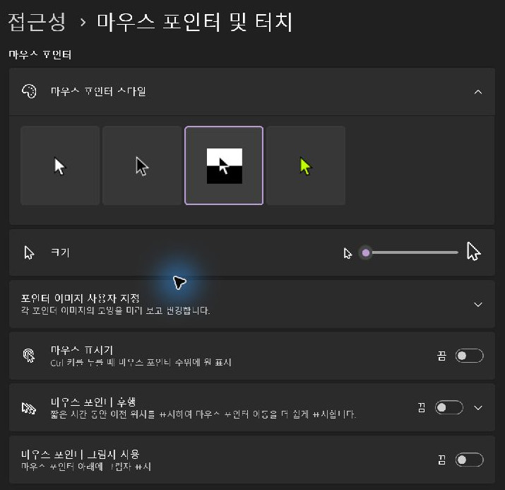
Windows 설정 · 2026. 10. 14. · 실제 Windows PC · 개인 계정 영역 제외
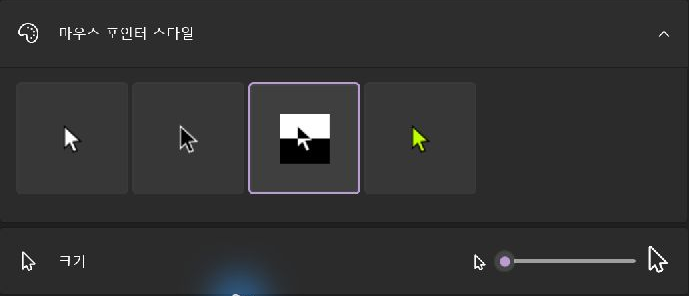
Windows 설정 · 2026. 10. 14. · 실제 Windows PC · 개인 계정 영역 제외
- 설정 → 접근성
- 마우스 포인터 및 터치
- 크기·색은 화면에서 확인
따라 하기
- Windows 설정을 엽니다.
- 접근성에서 마우스 포인터 관련 메뉴를 찾습니다.
- 프로젝터나 공유 화면에서 포인터가 충분히 보이는지 확인합니다.
완료 확인
설명하는 위치를 청중이 따라갈 수 있습니다.
설정 이름과 선택 항목은 Windows 버전에 따라 다를 수 있습니다.
4 · Windows
두 창을 나란히 배치합니다
자료를 읽으며 초안을 검토할 때 창 정렬을 사용합니다.
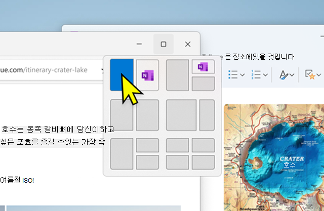
Windows 공식 매뉴얼 · 2026. 10. 13. 확인 · Microsoft 공식 예시 화면 · 공식 원문
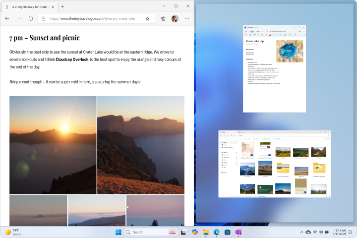
Windows 공식 매뉴얼 · 2026. 10. 13. 확인 · Microsoft 공식 예시 화면 · 공식 원문
- 원문은 한쪽
- 작성 화면은 다른 쪽
- 창 너비도 확인
따라 하기
- 창의 최대화 버튼에 포인터를 올려 창 정렬 메뉴를 봅니다.
- 나란히 볼 창 배치를 선택합니다.
- 두 번째 창을 배치하고 읽을 수 있는 너비로 조정합니다.
완료 확인
원문과 작성 화면을 동시에 읽을 수 있습니다.
5 · Windows
캡처 도구를 엽니다
필요한 영역만 이미지로 남깁니다.
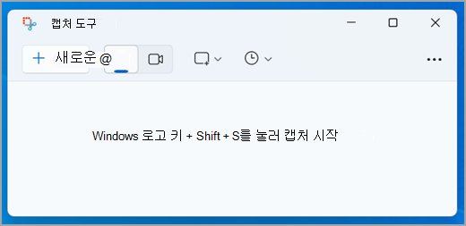
Windows 공식 매뉴얼 · 2026. 10. 13. 확인 · Microsoft 공식 예시 화면 · 공식 원문
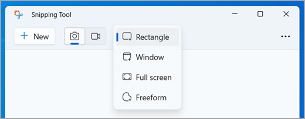
Windows 공식 매뉴얼 · 2026. 10. 13. 확인 · Microsoft 공식 예시 화면 · 공식 원문
- Win + Shift + S
- 사각형·창·전체 화면
- 영역 선택 전 내용 확인
따라 하기
- Win + Shift + S를 누릅니다.
- 목적에 맞는 캡처 모드를 선택합니다.
- 계정 정보나 다른 자료가 들어가지 않는 영역을 선택합니다.
완료 확인
필요한 내용만 캡처했습니다.
근거·도움말: Windows 캡처 도구 공식 도움말
6 · Windows
캡처한 화면을 확인합니다
작게 보이는 글자와 불필요한 정보부터 살펴봅니다.
- 알림에서 캡처 열기
- 글자가 읽히는지
- 개인정보가 포함됐는지
따라 하기
- 캡처 알림을 열어 이미지를 확인합니다.
- 학교 자료의 제목·날짜·본문이 잘리지 않았는지 봅니다.
- 불필요한 계정 정보가 있으면 배포할 이미지에서 제외합니다.
완료 확인
이미지의 내용과 배포 범위를 확인했습니다.
7 · Windows
표시하고 파일로 저장합니다
설명할 부분을 표시한 뒤 찾기 쉬운 이름으로 저장합니다.
- 핵심 부분만 표시
- 원문 내용은 유지
- 폴더와 이름 확인
따라 하기
- 캡처 도구의 펜이나 강조 기능으로 핵심 부분을 표시합니다.
- 저장 버튼을 눌러 위치를 정합니다.
- 대신고 교육활동을 식별할 수 있는 파일 이름을 사용합니다.
완료 확인
저장한 이미지를 다시 열 수 있습니다.
8 · Windows
이미지의 글자를 가져옵니다
텍스트 작업이 있는 버전에서는 OCR을 사용할 수 있습니다.
- 텍스트 작업
- 글자 복사
- 날짜·숫자는 원문 대조
따라 하기
- 글자가 있는 캡처 이미지를 엽니다.
- 텍스트 작업 메뉴가 있는지 확인합니다.
- 복사한 글자를 붙여 넣고 원문과 대조합니다.
완료 확인
날짜·시각·숫자의 인식 오류를 확인했습니다.
텍스트 작업이 없는 버전에서는 원문을 보며 직접 입력합니다.
근거·도움말: Windows 캡처 도구 공식 도움말
9 · Windows
클립보드 기록을 살펴봅니다
여러 문구를 복사할 때 Win + V를 사용합니다.
- Win + V
- 필요한 문구 선택
- 계정 정보는 복사하지 않기
따라 하기
- Win + V로 클립보드 기록의 현재 상태를 확인합니다.
- 학교 활동의 일반 문구를 복사합니다.
- 붙여 넣을 문구를 확인한 뒤 선택합니다.
완료 확인
의도한 문구를 올바른 입력칸에 붙여 넣었습니다.
암호·인증코드·학생 정보가 들어 있는 클립보드 기록을 화면 공유하지 않습니다.
10 · Windows
ZoomIt의 기본 설정을 확인합니다
설명할 화면을 확대하고 표시하는 도구입니다.
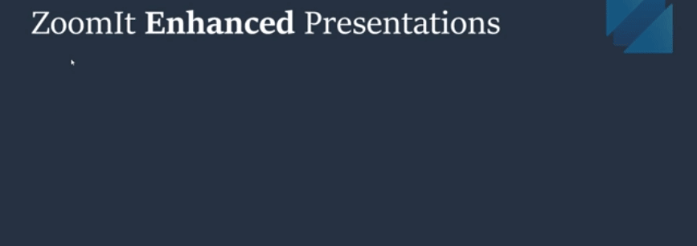
ZoomIt 공식 매뉴얼 · 2026. 10. 13. 확인 · Microsoft 공식 시연 · 공식 원문
- 확대
- 그리기
- LiveZoom·타이머
따라 하기
- Microsoft 공식 안내에서 ZoomIt을 확인합니다.
- 사용하는 PC의 ZoomIt 설정에서 단축키를 확인합니다.
- 다른 프로그램의 단축키와 겹치는지 살펴봅니다.
완료 확인
현재 설정의 단축키를 확인했습니다.
근거·도움말: ZoomIt 공식 안내
11 · Windows
Ctrl + 1로 화면을 확대합니다
확대된 화면에서 버튼과 글자를 설명합니다.
ZoomIt 공식 매뉴얼 · 2026. 10. 13. 확인 · Microsoft 공식 시연 · 공식 원문
- Ctrl + 1
- 휠로 배율 조절
- Esc로 돌아오기
따라 하기
- 확대할 부분에 포인터를 놓습니다.
- 기본 설정에서는 Ctrl + 1을 누릅니다.
- 휠로 배율을 조절하고 Esc로 돌아옵니다.
완료 확인
원래 화면으로 돌아올 수 있습니다.
ZoomIt 단축키는 사용자 설정으로 달라질 수 있습니다.
근거·도움말: ZoomIt 공식 안내
12 · Windows
Ctrl + 2로 화면에 표시합니다
화살표와 상자로 핵심을 짚습니다.
ZoomIt 공식 매뉴얼 · 2026. 10. 13. 확인 · Microsoft 공식 시연 · 공식 원문
- Ctrl + 2
- 상자: Ctrl
- 화살표: Ctrl + Shift
따라 하기
- 기본 설정에서 Ctrl + 2로 그리기를 시작합니다.
- Ctrl을 누른 채 상자를 그리거나 Ctrl + Shift로 화살표를 그립니다.
- Ctrl + Z로 마지막 표시를 지우고 Esc로 마칩니다.
완료 확인
원문을 바꾸지 않고 핵심 부분을 표시했습니다.
근거·도움말: ZoomIt 공식 안내
13 · Windows
LiveZoom으로 동작을 보여 줍니다
확대 상태에서 실제 조작이 필요한 경우에 사용합니다.
ZoomIt 공식 매뉴얼 · 2026. 10. 13. 확인 · Microsoft 공식 시연 · 공식 원문
- Ctrl + 4
- 확대 상태로 조작
- 같은 단축키로 종료
따라 하기
- 현재 ZoomIt 설정의 LiveZoom 단축키를 확인합니다.
- 기본 설정에서는 Ctrl + 4로 켭니다.
- 확대된 상태에서 조작한 뒤 다시 Ctrl + 4로 끕니다.
완료 확인
정지 화면 확대와 실시간 확대의 차이를 알 수 있습니다.
근거·도움말: ZoomIt 공식 안내
14 · Windows
타이머와 글자 표시를 사용합니다
활동 안내와 휴식 안내에 활용할 수 있습니다.
ZoomIt 공식 매뉴얼 · 2026. 10. 13. 확인 · Microsoft 공식 시연 · 공식 원문
- 그리기 중 T: 글자
- W·K: 보드
- Ctrl + 3: 타이머
따라 하기
- 그리기 모드에서 T를 눌러 설명 문구를 입력합니다.
- 필요하면 W 또는 K로 보드를 엽니다.
- 기본 타이머 단축키 Ctrl + 3을 확인하고 Esc로 마칩니다.
완료 확인
현재 화면과 타이머를 전환할 수 있습니다.
근거·도움말: ZoomIt 공식 안내
15 · Windows
가상 데스크톱으로 작업을 나눕니다
수업 화면과 준비 화면을 별도의 작업 공간에 둡니다.
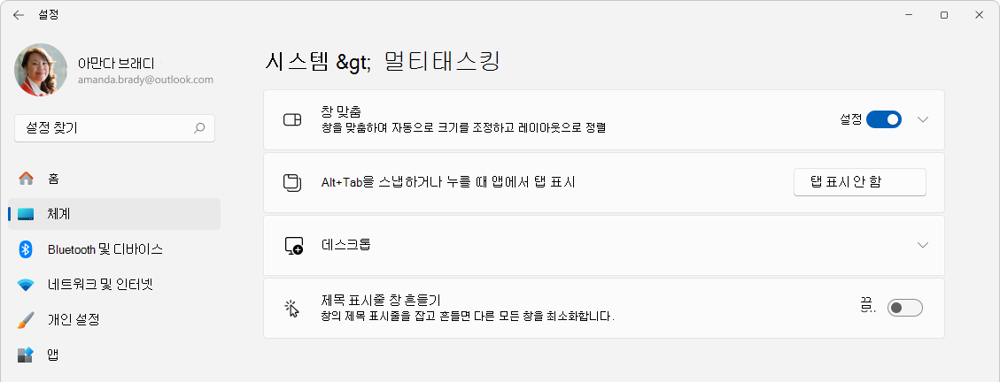
Windows 공식 매뉴얼 · 2026. 10. 13. 확인 · Microsoft 공식 예시 화면 · 공식 원문
- 작업 보기
- 수업용·준비용 공간
- 앱과 파일은 그대로
따라 하기
- 작업 표시줄의 작업 보기 또는 Win + Tab을 엽니다.
- 열려 있는 창과 데스크톱을 확인합니다.
- 업무 목적에 따라 사용할 작업 공간을 구분합니다.
완료 확인
창 전환과 데스크톱 전환의 차이를 알 수 있습니다.
가상 데스크톱은 창을 정리하는 기능입니다. 별도 계정이나 보안 격리 공간을 만드는 기능은 아닙니다.
근거·도움말: Windows 가상 데스크톱 공식 안내
16 · Windows
새 데스크톱을 만들고 이름을 정합니다
목적이 보이는 이름으로 작업 공간을 구분합니다.
Windows 공식 매뉴얼 · 2026. 10. 13. 확인 · Microsoft 공식 예시 화면 · 공식 원문
- 작업 보기 → 새 데스크톱
- 데스크톱 이름 변경
- Win + Ctrl + D
따라 하기
- 작업 보기에서 새 데스크톱을 선택합니다.
- 데스크톱 이름을 눌러 목적에 맞게 바꿉니다.
- 수업 자료와 준비 자료를 어느 공간에 둘지 확인합니다.
완료 확인
작업 공간의 목적을 이름으로 구분할 수 있습니다.
근거·도움말: Windows 가상 데스크톱 공식 안내
17 · Windows
창을 다른 데스크톱으로 옮깁니다
작업 보기에서 원하는 창을 이동합니다.
Windows 공식 매뉴얼 · 2026. 10. 13. 확인 · Microsoft 공식 예시 화면 · 공식 원문
- 창의 이동 메뉴
- 옮길 데스크톱 선택
- 이동한 창 확인
따라 하기
- 작업 보기에서 옮길 창을 찾습니다.
- 창의 이동 메뉴에서 대상 데스크톱을 선택합니다.
- 대상 데스크톱에서 창이 보이는지 확인합니다.
완료 확인
필요한 창을 원하는 작업 공간에 배치했습니다.
근거·도움말: Windows 가상 데스크톱 공식 안내
18 · Windows
전환과 닫기를 구분합니다
작업 공간을 닫아도 열려 있던 앱은 다른 공간으로 이동합니다.
Windows 공식 매뉴얼 · 2026. 10. 13. 확인 · Microsoft 공식 예시 화면 · 공식 원문
- 전환: Win + Ctrl + ←/→
- 작업 보기에서 선택
- 닫기: Win + Ctrl + F4
따라 하기
- 작업 보기에서 다른 데스크톱을 선택합니다.
- Win + Ctrl + 좌우 방향키로 전환할 수 있음을 확인합니다.
- 닫으려는 데스크톱과 남겨 둘 창을 확인합니다.
완료 확인
데스크톱을 닫는 것과 앱을 종료하는 것을 구분합니다.
근거·도움말: Windows 가상 데스크톱 공식 안내
19 · senedu
senedu에서 학교 서비스를 만납니다
서울교육청의 학교 계정으로 연결된 서비스를 살펴봅니다.
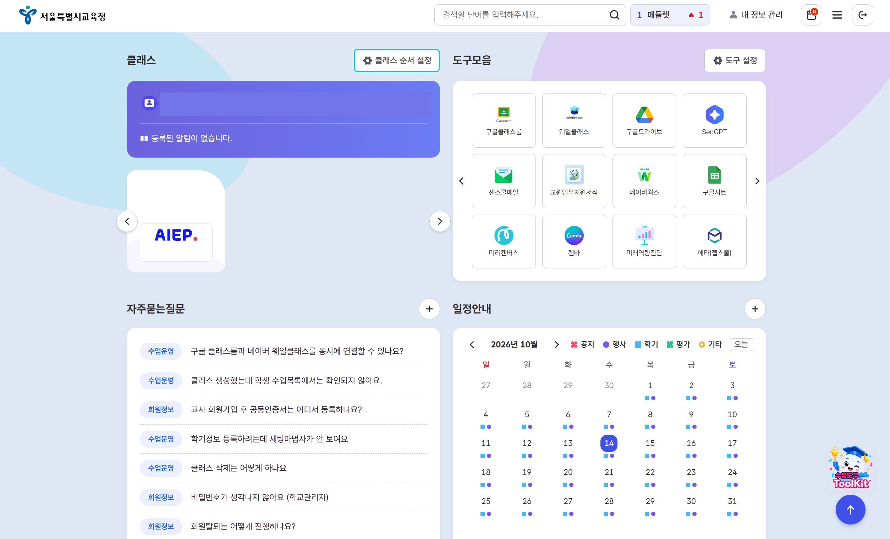
senedu · 2026. 10. 14. 제공 · 사용자 제공 학교 계정 화면
- senedu 접속
- 학교 계정 확인
- 서비스별 로그인 구분
따라 하기
- senedu에 접속합니다.
- 본인의 학교 계정으로 로그인합니다.
- 첫 화면에서 제공되는 서비스 연결을 확인합니다.
완료 확인
학교 계정의 서비스 진입점을 찾았습니다.
근거·도움말: SEN스쿨
20 · senedu
로그인한 계정을 먼저 확인합니다
같은 Chrome에서도 개인 계정과 학교 계정을 구분합니다.
senedu · 2026. 10. 14. 제공 · 사용자 제공 학교 계정 화면
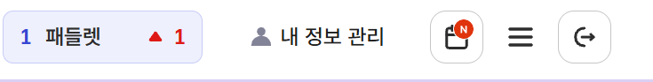
senedu · 2026. 10. 14. 제공 · 사용자 제공 학교 계정 화면
- 로그인 계정
- 브라우저 프로필
- 서비스의 계정 표시
따라 하기
- 현재 브라우저 프로필을 확인합니다.
- senedu의 로그인 계정을 확인합니다.
- 이동한 Google·WORKS 서비스에서도 학교 계정인지 확인합니다.
완료 확인
실습에 사용할 학교 계정을 확인했습니다.
근거·도움말: SEN스쿨
21 · senedu
세 종류의 계정을 구분합니다
senedu 연결 계정과 학교별 Microsoft 계정의 발급 경로를 구분합니다.
- senedu 통합 계정
- 연결된 Google·WORKS
- 학교별 Microsoft 계정
| 서비스 | 사용할 계정 |
|---|---|
| senedu·WORKS·SenGPT | 학교 통합 계정의 연결·권한 확인 |
| Google Drive·교육용 AI | senedu에 연결된 학교 Google 계정 |
| Microsoft·Office·OneDrive | 학교별 발급 Microsoft 계정 |
따라 하기
- senedu에서 연결되는 서비스를 확인합니다.
- Google와 WORKS의 계정 상태를 각각 확인합니다.
- Microsoft는 교육청 가입센터에서 학교 계정 발급 절차를 확인합니다.
완료 확인
어떤 계정으로 각 서비스를 사용하는지 알 수 있습니다.
근거·도움말: SEN스쿨
22 · senedu
학교 계정으로 제공되는 도구
학교 계정의 지원 조건을 기준으로 활용합니다.
senedu · 2026. 10. 14. 제공 · 사용자 제공 학교 계정 화면

senedu · 2026. 10. 14. 제공 · 사용자 제공 학교 계정 화면
- WORKS·Google 저장 공간
- Google 교육용 AI
- Microsoft·SenGPT
따라 하기
- 연결된 서비스 메뉴를 확인합니다.
- 각 서비스에서 본인의 이용 조건을 읽습니다.
- 계정별 지원량과 기능을 다음 순서로 살펴봅니다.
완료 확인
학교 계정과 개인 구독을 구분할 수 있습니다.
근거·도움말: SEN스쿨
23 · NAVER WORKS
메시지로 짧게 확인합니다
학술탐구의 날에 필요한 확인 사항을 간결하게 전달합니다.
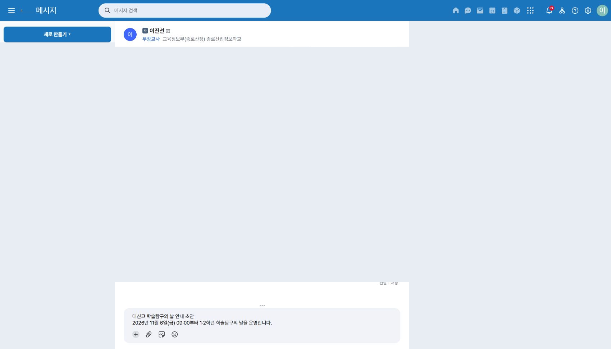
NAVER WORKS 메시지 · 2026. 10. 14. · senedu 연결 학교 계정
- 메시지 목록
- 대화 상대
- 짧은 확인 요청
따라 하기
- WORKS의 메시지 화면을 엽니다.
- 대화 상대의 이름과 소속을 확인합니다.
- 질문이나 확인 사항을 한 가지씩 정리합니다.
완료 확인
대화 상대와 전달할 목적을 확인했습니다.
24 · NAVER WORKS
대화 상대를 먼저 선택합니다
동명이인과 다른 조직의 계정을 구분합니다.
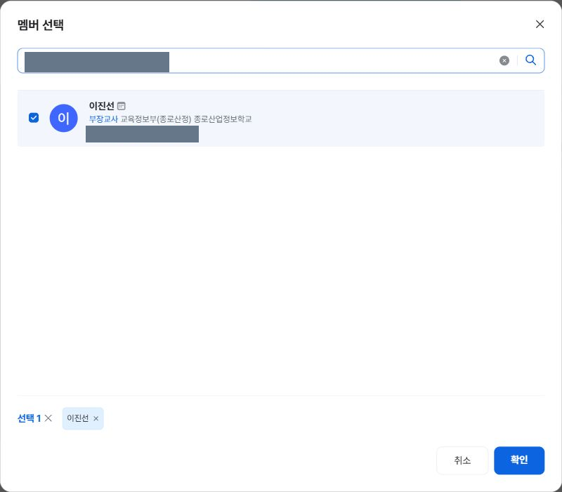
NAVER WORKS 메시지 · 2026. 10. 14. · senedu 연결 학교 계정
- 이름·소속 함께 확인
- 개인·그룹 구분
- 참여자 확인
따라 하기
- 새 대화의 상대 검색을 엽니다.
- 검색 결과의 이름과 소속을 함께 확인합니다.
- 그룹 대화라면 참여자 전체를 확인합니다.
완료 확인
의도한 상대와 대화할 준비가 됐습니다.
25 · NAVER WORKS
학술탐구 안내 문구를 작성합니다
교육계획에 있는 사실과 확인할 사항을 나눕니다.
NAVER WORKS 메시지 · 2026. 10. 14. · senedu 연결 학교 계정
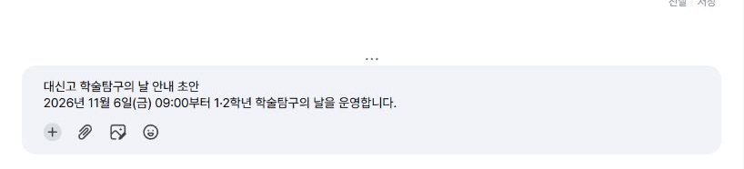
NAVER WORKS 메시지 · 2026. 10. 14. · senedu 연결 학교 계정
- 11월 6일 09:00~
- 대상: 1·2학년
- 두 장소는 예정
따라 하기
- 교육계획 책자 76쪽의 일시와 대상을 확인합니다.
- 과천국립과학관·국립중앙박물관은 예정으로 적습니다.
- 준비물과 이동 방법 등 확인할 사항을 따로 적습니다.
실습 문구
대신고 학술탐구의 날 안내 초안 2026년 11월 6일(금) 09:00부터 1·2학년 학술탐구의 날을 운영합니다. 장소는 1학년 과천국립과학관, 2학년 국립중앙박물관으로 예정되어 있습니다. 학생은 자신만의 테마를 정하여 보고서를 작성한 뒤 제출합니다. 확인할 사항: 이동 방법·준비물·행사 종료 시각·보고서 제출 기한 근거: 대신고등학교 2026 학교교육계획 책자 76쪽
완료 확인
원문에 없는 세부 내용을 확정하지 않았습니다.
근거·도움말: 대신고 2026 학교교육계획 · 책자 25·76·140쪽
26 · NAVER WORKS
파일과 메시지를 함께 확인합니다
첨부한 파일의 내용까지 전달 전에 확인합니다.
- 첨부 파일 이름
- 파일 내용
- 수신 대상
따라 하기
- 첨부할 학술탐구 안내 초안을 선택합니다.
- 다른 학교 자료나 개인정보가 들어 있지 않은지 확인합니다.
- 메시지와 첨부 파일이 같은 행사 자료인지 확인합니다.
완료 확인
메시지와 첨부 파일의 내용이 일치합니다.
27 · NAVER WORKS
메일로 내용을 정리합니다
제목·본문·첨부를 갖춰 안내 내용을 전달합니다.
- 제목에 목적 표시
- 본문에 확인된 사실
- 첨부의 버전 확인
따라 하기
- WORKS 메일 화면을 엽니다.
- 학술탐구의 날을 식별할 수 있는 제목을 작성합니다.
- 본문과 첨부 파일의 내용을 확인합니다.
완료 확인
메일의 목적을 제목과 본문에서 알 수 있습니다.
28 · NAVER WORKS
받는 사람과 참조를 확인합니다
주소와 수신 범위를 확인한 뒤 발송을 판단합니다.
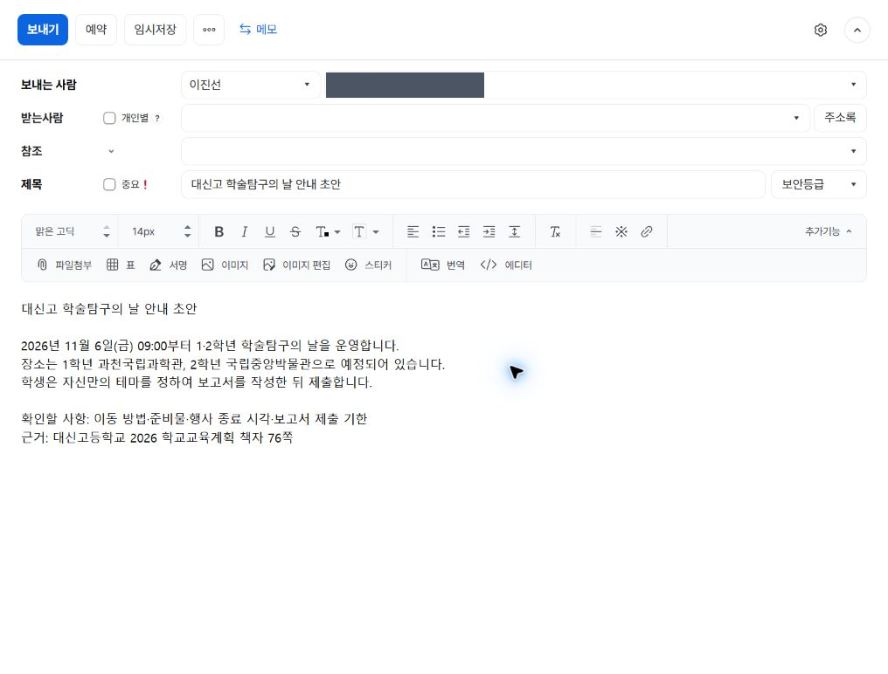
NAVER WORKS 메일 · 2026. 10. 13. · senedu 연결 학교 계정
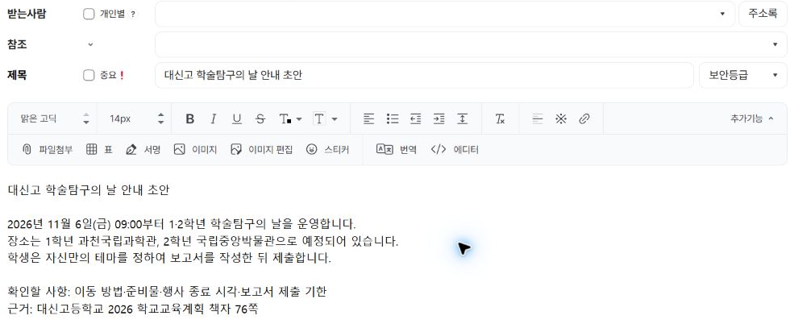
NAVER WORKS 메일 · 2026. 10. 13. · senedu 연결 학교 계정
- 받는 사람
- 참조·숨은 참조
- 첨부와 주소 확인
따라 하기
- 받는 사람의 학교 계정과 주소를 확인합니다.
- 참조가 필요한 사람인지 검토합니다.
- 본문과 첨부, 모든 수신자를 함께 확인합니다.
완료 확인
메일을 받을 대상이 명확합니다.
29 · NAVER WORKS
학술탐구 메일의 초안을 점검합니다
계획서의 사실과 미정 내용을 구분합니다.
NAVER WORKS 메일 · 2026. 10. 13. · senedu 연결 학교 계정
NAVER WORKS 메일 · 2026. 10. 13. · senedu 연결 학교 계정
- 장소는 예정
- 종료 시각은 미확인
- 준비물·이동은 확인 필요
따라 하기
- 계획서의 날짜·시작 시각·대상 학년을 대조합니다.
- 장소의 예정 표현이 빠지지 않았는지 봅니다.
- 본문과 첨부에 원문에 없는 조건이 추가됐는지 확인합니다.
완료 확인
메일 초안에서 사실·예정·미정이 구분됩니다.
근거·도움말: 대신고 2026 학교교육계획 · 책자 25·76·140쪽
30 · NAVER WORKS
WORKS Drive는 파일 보관 공간입니다
학교 계정의 안내 용량은 500GB입니다.
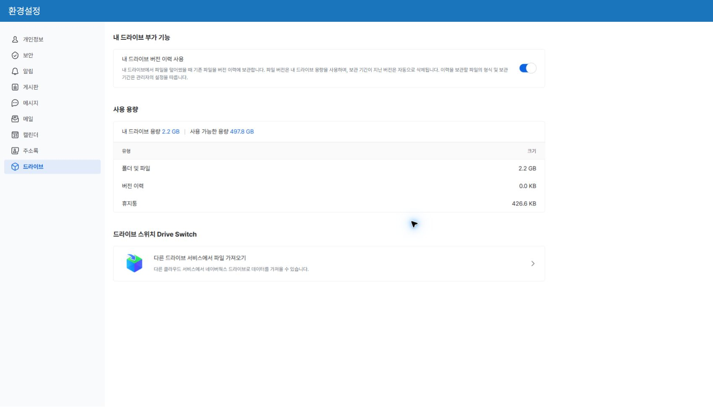
NAVER WORKS 드라이브 · 2026. 10. 14. · senedu 연결 학교 계정
- 500GB
- 업로드·보기·다운로드
- 웹 문서 편집은 지원 범위에서 제외
| 기능 | 이용 안내 |
|---|---|
| 업로드 | 가능 |
| 보기 | 가능 |
| 웹에서 문서 쓰기·편집 | 이 학교 계정 안내 범위에서 제외 |
| 다운로드 | 가능 |
따라 하기
- 학교 계정의 Drive 화면을 엽니다.
- 현재 사용량과 안내 용량을 확인합니다.
- 파일을 보관하고 확인하는 기능을 살펴봅니다.
완료 확인
이 연수에서 안내하는 WORKS Drive의 사용 범위를 알 수 있습니다.
31 · NAVER WORKS
학술탐구 자료 폴더를 만듭니다
행사별로 자료를 찾기 쉽게 모읍니다.
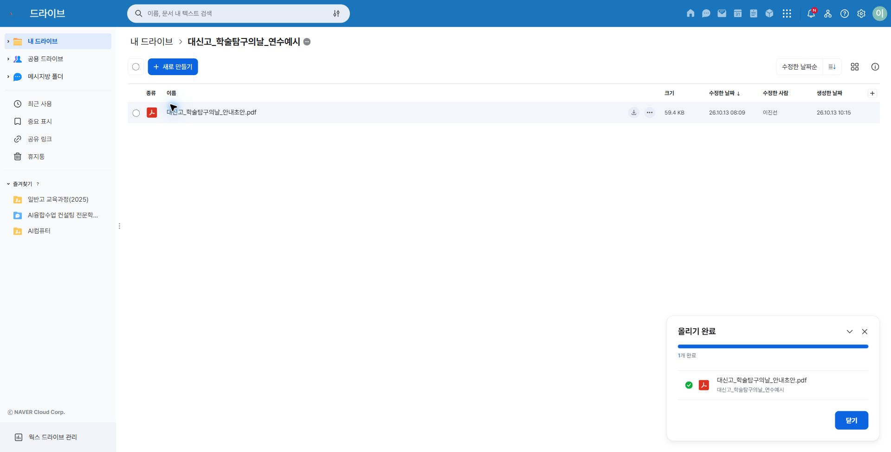
NAVER WORKS 드라이브 · 2026. 10. 13. · senedu 연결 학교 계정
- 행사 이름
- 폴더 위치
- 파일 버전
따라 하기
- Drive에서 폴더를 만들 위치를 확인합니다.
- 폴더 만들기 메뉴를 엽니다.
- 학술탐구 자료임을 알 수 있는 이름을 입력합니다.
완료 확인
행사 자료를 넣을 폴더를 찾을 수 있습니다.
32 · NAVER WORKS
안내 초안을 업로드합니다
준비한 파일을 폴더에 보관합니다.
NAVER WORKS 드라이브 · 2026. 10. 13. · senedu 연결 학교 계정
- 업로드 대상
- 파일 이름
- 완료 상태
따라 하기
- 행사 자료 폴더를 엽니다.
- 업로드할 안내 초안 파일을 선택합니다.
- 업로드 완료 후 이름과 크기를 확인합니다.
완료 확인
의도한 폴더에 파일이 올라갔습니다.
근거·도움말: WORKS Drive 업로드
33 · NAVER WORKS
파일을 열어 내용을 봅니다
최신 파일과 원문 내용이 맞는지 확인합니다.
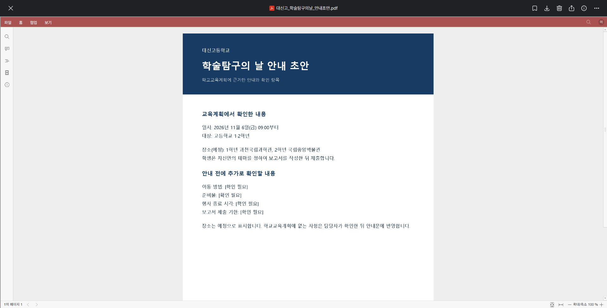
NAVER WORKS 드라이브 · 2026. 10. 13. · senedu 연결 학교 계정
- 파일 미리 보기
- 예정 표현 확인
- 버전 확인
따라 하기
- 업로드한 파일을 엽니다.
- 날짜·대상·장소의 예정 표현을 읽습니다.
- 수정이 필요하면 원본 편집 도구에서 고친 뒤 다시 보관합니다.
완료 확인
Drive의 보기와 원본 편집을 구분합니다.
34 · NAVER WORKS
다운로드해 다시 사용합니다
필요한 파일을 PC로 가져옵니다.
NAVER WORKS 드라이브 · 2026. 10. 13. · senedu 연결 학교 계정
- 다운로드
- 저장 위치
- 같은 파일인지 확인
따라 하기
- 대상 파일의 다운로드 메뉴를 선택합니다.
- PC의 저장 위치를 확인합니다.
- 받은 파일을 열어 이름과 내용을 확인합니다.
완료 확인
보관한 파일을 PC에서 다시 열 수 있습니다.
35 · NAVER WORKS
캘린더로 날짜를 함께 봅니다
학술탐구의 날의 날짜와 시작 시각을 확인합니다.
- 캘린더 선택
- 11월 6일
- 09:00부터
따라 하기
- WORKS 캘린더를 엽니다.
- 2026년 11월 6일을 찾습니다.
- 일정 입력에서 제목과 시작 시각을 확인합니다.
완료 확인
일정의 날짜와 원문 근거를 연결할 수 있습니다.
근거·도움말: 대신고 2026 학교교육계획 · 책자 25·76·140쪽
36 · NAVER WORKS
일정 날짜와 시작 정보를 표시합니다
종료 시각이 확인되지 않은 경우를 종일 표시와 메모로 구분합니다.
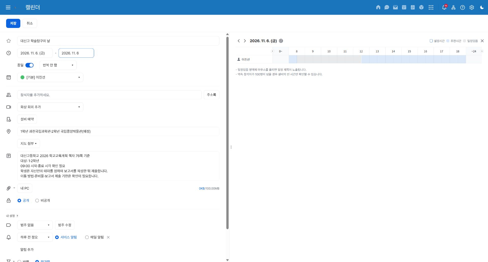
NAVER WORKS 캘린더 · 2026. 10. 13. · senedu 연결 학교 계정
- 11월 6일 하루 · 종일 표시
- 메모: 09:00 시작·종료 시각 확인 필요
- 대상: 1·2학년 · 장소는 예정
따라 하기
- 일정 제목을 입력하고 시작·종료 날짜를 모두 2026년 11월 6일로 선택합니다.
- 종일을 선택하고 메모에 ‘09:00 시작·종료 시각 확인 필요’를 적습니다.
- 예정 장소와 대상을 확인하고, 이동 방법·준비물·보고서 제출 기한은 확인할 항목으로 남깁니다.
완료 확인
행사 날짜와 실제 시작 정보를 표시하고 미정인 종료 시각을 구분했습니다.
이 예시의 종일 표시는 행사 날짜를 표시하는 방법입니다. 하루 종일 운영한다는 뜻으로 해석하지 않습니다. 종료 시각을 확인하면 실제 운영 시간에 맞게 수정합니다.
근거·도움말: 대신고 2026 학교교육계획 · 책자 25·76·140쪽
37 · NAVER WORKS
참석자와 알림을 확인합니다
일정 저장이 초대나 알림으로 이어지는지 살펴봅니다.
NAVER WORKS 캘린더 · 2026. 10. 13. · senedu 연결 학교 계정
- 내 캘린더·공유 캘린더
- 참석자
- 알림
따라 하기
- 어느 캘린더에 저장하는지 확인합니다.
- 참석자와 공유 범위를 확인합니다.
- 알림 설정을 읽고 의도한 대상만 포함됐는지 점검합니다.
완료 확인
저장했을 때 전달될 대상과 알림을 알 수 있습니다.
38 · Google Drive
Google Drive에서 작성과 보관을 이어갑니다
학교 계정의 안내 용량은 200GB입니다.
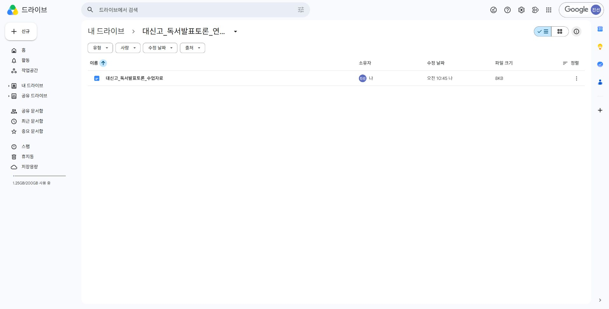
Google Drive · 2026. 10. 13. · 교육용 Google 계정
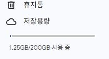
Google Drive · 2026. 10. 13. · 교육용 Google 계정
- 200GB
- 업로드·보기·쓰기·다운로드
- Docs·Sheets·Slides와 연결
| 기능 | 이용 안내 |
|---|---|
| 업로드·보기 | 가능 |
| 웹 문서 작성·편집 | 가능 |
| 다운로드 | 가능 |
따라 하기
- 학교 Google 계정으로 Drive를 엽니다.
- 사용량과 용량 표시를 확인합니다.
- 파일 보관과 웹 문서 작성 메뉴를 확인합니다.
완료 확인
Google Drive에서 할 수 있는 작업을 구분합니다.
39 · Google Drive
독서 활동 자료를 모읍니다
독서·발표·토론 수업 자료의 폴더를 준비합니다.
Google Drive · 2026. 10. 13. · 교육용 Google 계정
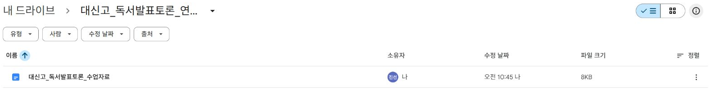
Google Drive · 2026. 10. 13. · 교육용 Google 계정
- 수업 자료 폴더
- 원문과 활동지 구분
- 찾기 쉬운 이름
따라 하기
- Drive에서 새 폴더를 만들 위치를 확인합니다.
- 독서 활동 자료를 식별할 수 있는 이름을 입력합니다.
- 원문과 교사가 작성할 활동지를 구분합니다.
완료 확인
독서 활동 자료를 넣을 폴더를 찾을 수 있습니다.
근거·도움말: Google Drive 폴더 만들기
40 · Google Drive
자료를 업로드합니다
파일이 올라간 위치와 완료 상태를 확인합니다.
- 새로 만들기
- 파일 업로드
- 대상 폴더 확인
따라 하기
- 수업 자료 폴더를 엽니다.
- 파일 업로드를 선택하고 수업 자료를 고릅니다.
- 업로드된 파일 이름과 완료 상태를 확인합니다.
완료 확인
선택한 수업 자료가 폴더에 있습니다.
근거·도움말: Google Drive 파일 업로드
41 · Google Drive
웹에서 활동지를 편집합니다
교사가 고른 도서와 교과에 맞춰 빈 양식을 채웁니다.
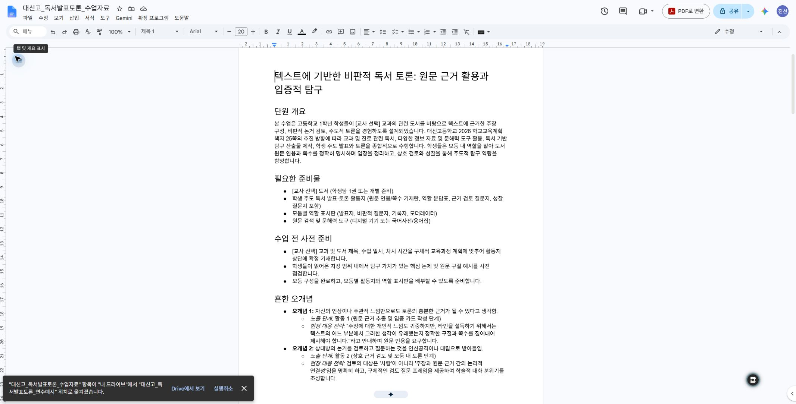
Google Docs · 2026. 10. 13. · 교육용 Google 계정
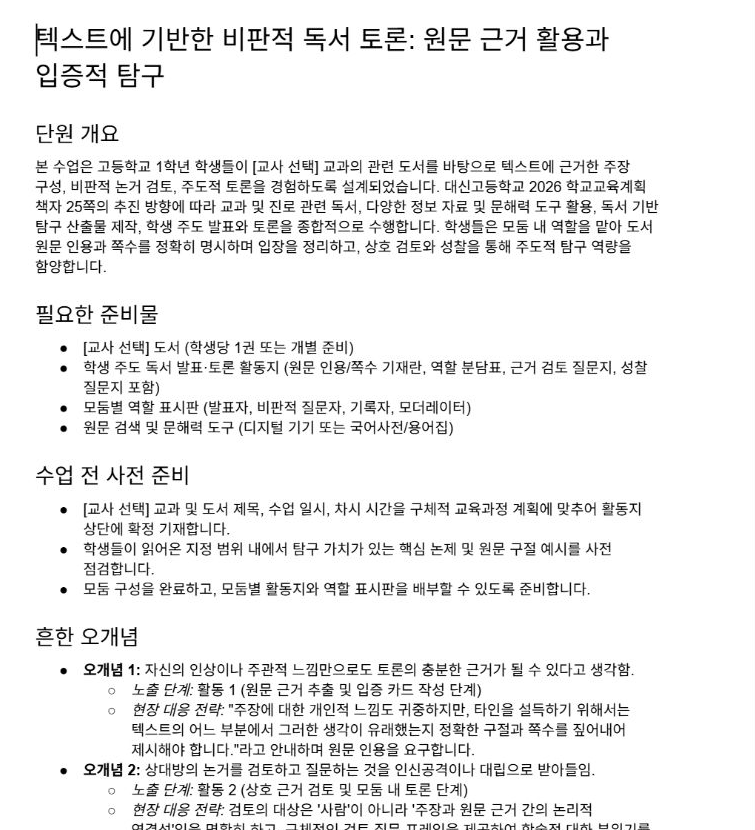
Google Docs · 2026. 10. 13. · 교육용 Google 계정
- Google 문서
- 자동 저장 상태
- 교사가 내용 결정
따라 하기
- 폴더에서 Google 문서를 엽니다.
- 독서·발표·토론 활동지의 문구를 입력하거나 붙여 넣습니다.
- 도서와 교과에 맞게 질문을 고치고 저장 상태를 확인합니다.
완료 확인
브라우저에서 문서를 수정하고 다시 열 수 있습니다.
42 · Google Drive
다운로드 형식을 고릅니다
배포하거나 다른 편집 도구에서 사용할 형식을 선택합니다.
- PDF·Word 등
- 필요한 형식
- 다운로드 후 확인
따라 하기
- 웹 문서의 다운로드 메뉴를 엽니다.
- 배포 목적에 맞는 형식을 선택합니다.
- 받은 파일을 열어 글자·표·페이지가 유지됐는지 확인합니다.
완료 확인
다운로드한 자료의 형식과 내용을 확인했습니다.
43 · Gemini 교육용
학교 계정의 Gemini를 엽니다
senedu에 연결된 교육용 Google 계정을 사용합니다.
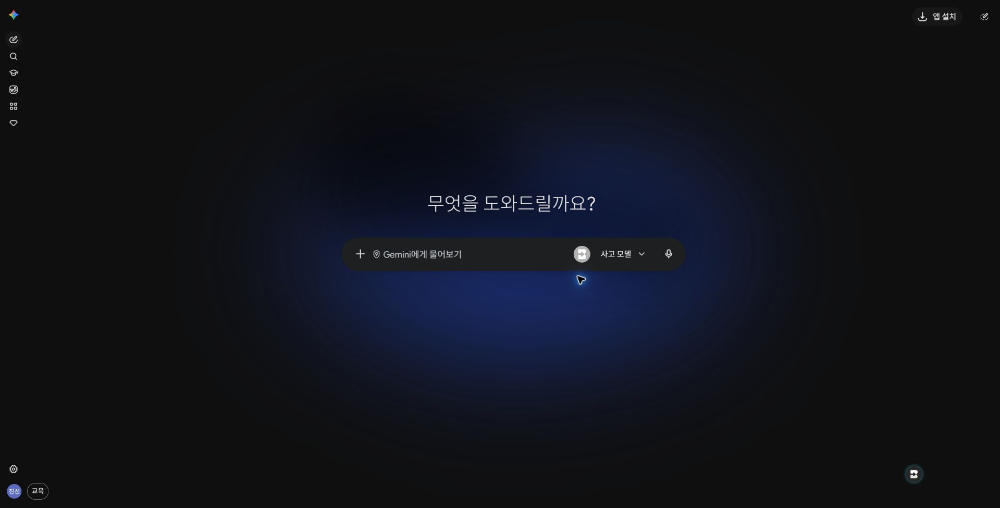
Gemini 교육용 · 2026. 10. 13. · 교육용 Google 계정
- 학교 계정
- 교육용 이용 조건
- 모델과 한도 표시
따라 하기
- Gemini를 엽니다.
- 서비스 안의 계정 표시에서 학교 계정인지 확인합니다.
- 이용할 수 있는 모델과 계정 조건을 확인합니다.
완료 확인
개인 계정과 학교 교육용 계정을 구분합니다.
근거·도움말: 교육용 Gemini·Gemini Notebook 시작 안내
44 · Gemini 교육용
교육용 제공 조건과 한도를 봅니다
senedu 연결 Gemini는 Plus와 유사한 한도로 안내합니다.
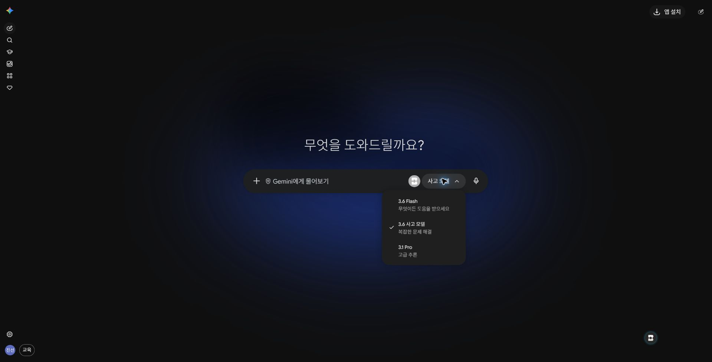
Gemini 교육용 · 2026. 10. 13. · 교육용 Google 계정
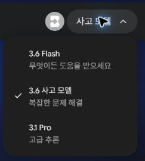
Gemini 교육용 · 2026. 10. 13. · 교육용 Google 계정
- 교육용 계정의 제공 조건
- 개인 Plus 구독과 구분
- 현재 계정의 표시 확인
따라 하기
- 학교 계정의 제공 조건을 확인합니다.
- 모델·기능별 사용 한도 표시를 읽습니다.
- 개인 유료 구독의 모든 기능과 같다고 해석하지 않습니다.
완료 확인
학교 계정의 교육용 조건을 기준으로 사용할 수 있습니다.
학교 계정 안내는 Plus와 유사한 한도입니다. 실제 기능·한도는 배정 라이선스와 관리자 설정, 서비스 변경에 따라 확인합니다.
근거·도움말: 교육용 Gemini·Gemini Notebook 시작 안내
45 · Gemini 교육용
학교교육계획을 요청의 근거로 씁니다
독서 활동의 목적과 추진 내용을 먼저 제공합니다.
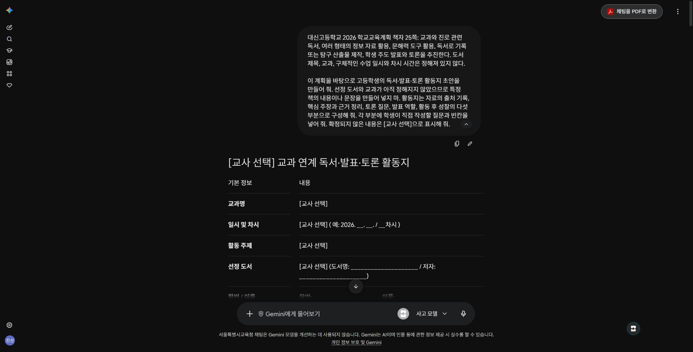
Gemini 교육용 · 2026. 10. 13. · 교육용 Google 계정
- 책자 25쪽
- 학생 주도 발표·토론
- 도서·교과는 교사 선택
따라 하기
- 독서 활동 계획의 필요한 내용만 읽습니다.
- 실제 학생 정보 없이 활동 목적을 입력합니다.
- 도서·교과·날짜가 정해지지 않았음을 함께 적습니다.
실습 문구
대신고등학교 2026 학교교육계획 책자 25쪽: 교과와 진로 관련 독서, 여러 형태의 정보 자료 활용, 문해력 도구 활용, 독서로 기록 또는 탐구 산출물 제작, 학생 주도 발표와 토론을 추진한다. 도서 제목, 교과, 구체적인 수업 일시와 차시 시간은 정해져 있지 않다.
완료 확인
AI가 사용할 근거와 추측하지 않을 항목을 전달했습니다.
근거·도움말: 대신고 2026 학교교육계획 · 책자 25·76·140쪽
46 · Gemini 교육용
독서·발표·토론 활동지를 요청합니다
학생이 원문 근거를 직접 찾는 질문을 만듭니다.
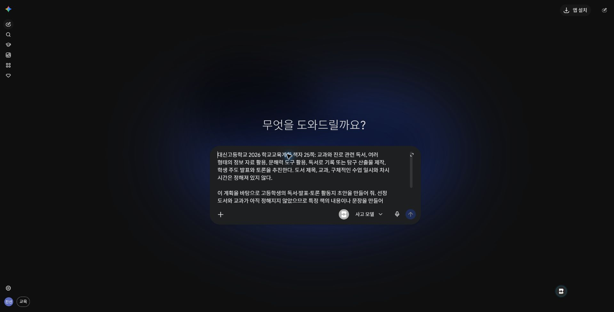
Gemini 교육용 · 2026. 10. 13. · 교육용 Google 계정
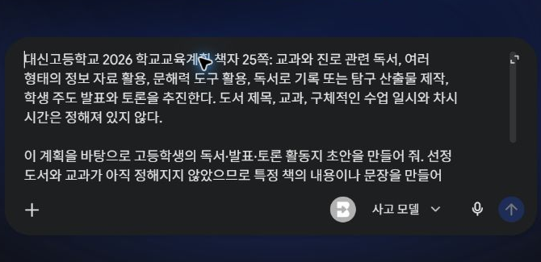
Gemini 교육용 · 2026. 10. 13. · 교육용 Google 계정
- 출처·주장·근거
- 발표와 토론 역할
- 학생이 작성할 빈칸
따라 하기
- 교안의 활동지 요청문을 읽습니다.
- 수업 목적과 필요한 형식을 확인한 뒤 입력합니다.
- 응답에 특정 책의 내용이 만들어졌는지 확인합니다.
실습 문구
대신고등학교 2026 학교교육계획 책자 25쪽: 교과와 진로 관련 독서, 여러 형태의 정보 자료 활용, 문해력 도구 활용, 독서로 기록 또는 탐구 산출물 제작, 학생 주도 발표와 토론을 추진한다. 도서 제목, 교과, 구체적인 수업 일시와 차시 시간은 정해져 있지 않다. 이 계획을 바탕으로 고등학생의 독서·발표·토론 활동지 초안을 만들어 줘. 선정 도서와 교과가 아직 정해지지 않았으므로 특정 책의 내용이나 문장을 만들어 넣지 마. 활동지는 자료의 출처 기록, 핵심 주장과 근거 정리, 토론 질문, 발표 역할, 활동 후 성찰의 다섯 부분으로 구성해 줘. 각 부분에 학생이 직접 작성할 질문과 빈칸을 넣어 줘. 확정되지 않은 내용은 [교사 선택]으로 표시해 줘.
완료 확인
책을 정하기 전에도 사용할 수 있는 활동지 초안이 있습니다.
근거·도움말: 교육용 Gemini·Gemini Notebook 시작 안내
47 · Gemini 교육용
생성한 활동지를 검토합니다
학교 계획과 원문 근거를 함께 확인합니다.
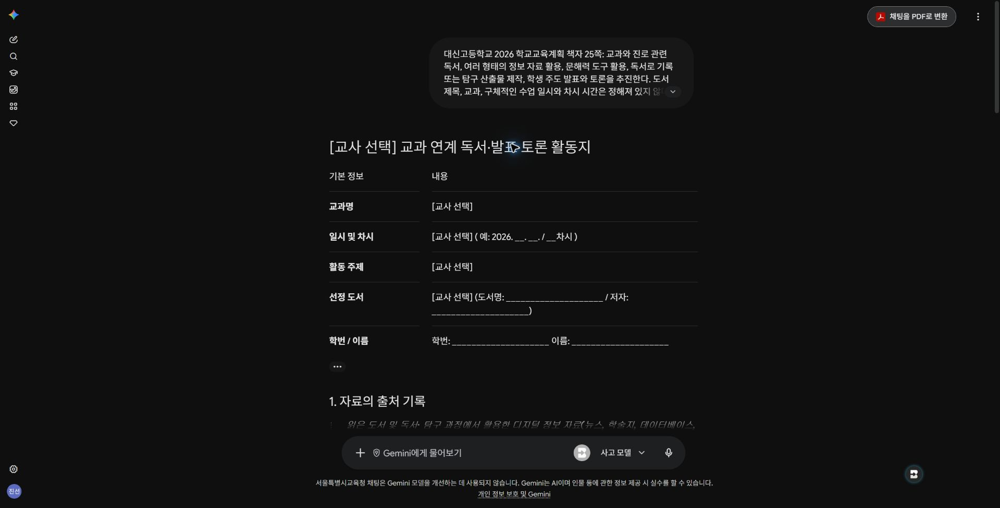
Gemini 교육용 · 2026. 10. 13. · 교육용 Google 계정
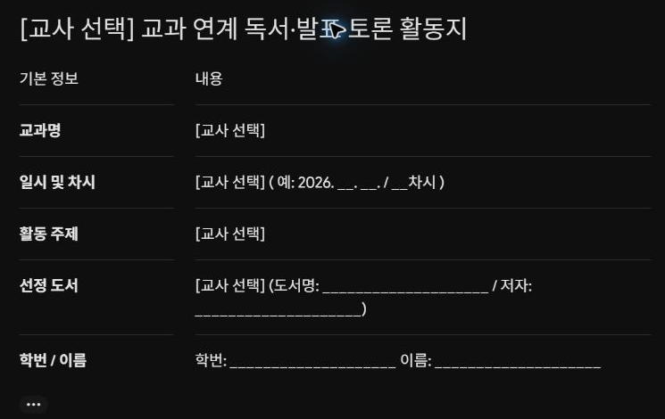
Gemini 교육용 · 2026. 10. 13. · 교육용 Google 계정
- 학생이 찾을 근거
- 추측한 책 내용
- 교사가 결정할 조건
따라 하기
- 출처와 근거를 기록할 부분이 있는지 봅니다.
- 원문을 읽어야 답할 수 있는 질문인지 확인합니다.
- 교사가 정할 도서·교과·일시가 임의로 확정됐는지 점검합니다.
완료 확인
활동지를 수업에 쓰기 전에 고칠 부분을 찾았습니다.
근거·도움말: 교육용 Gemini·Gemini Notebook 시작 안내
48 · Gemini 교육용
한 번 더 구체적으로 수정합니다
바꿀 질문과 유지할 조건을 함께 적습니다.
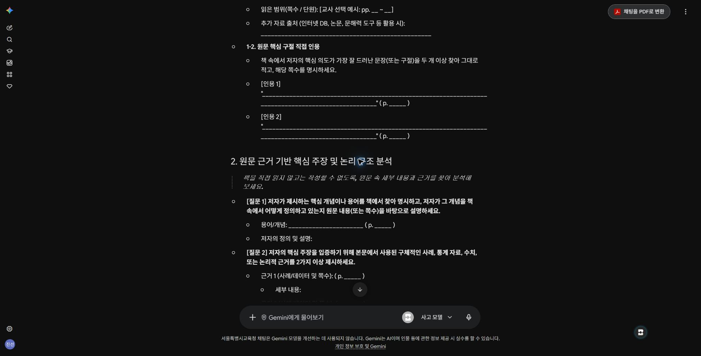
Gemini 교육용 · 2026. 10. 13. · 교육용 Google 계정
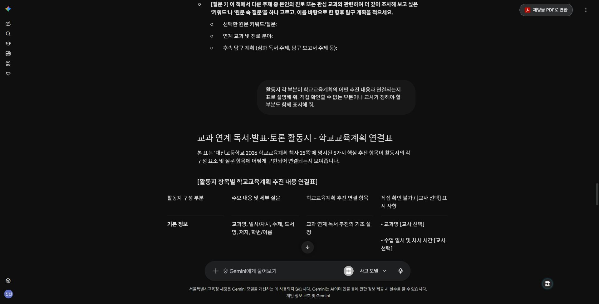
Gemini 교육용 · 2026. 10. 13. · 교육용 Google 계정
- 바꿀 부분을 지정
- 근거 찾는 질문
- 미정 정보 유지
따라 하기
- 활동지에서 고칠 질문을 찾습니다.
- 수정 요청문에 이유와 기준을 적습니다.
- 새 응답을 이전 초안과 비교합니다.
실습 문구
활동지의 질문을 다시 검토해 줘. 책 내용을 읽지 않고도 형식적으로 답할 수 있는 질문은 줄이고, 학생이 원문 근거를 찾아 기록해야 하는 질문으로 바꿔 줘. 특정 도서·교과·날짜를 추측해 넣지 말아 줘.
완료 확인
수정 요청이 활동지에 반영됐는지 확인했습니다.
근거·도움말: 교육용 Gemini·Gemini Notebook 시작 안내
49 · Classroom Gemini
Classroom에서 Gemini 도구를 찾습니다
수업 자료 제작을 위한 교육용 도구를 살펴봅니다.
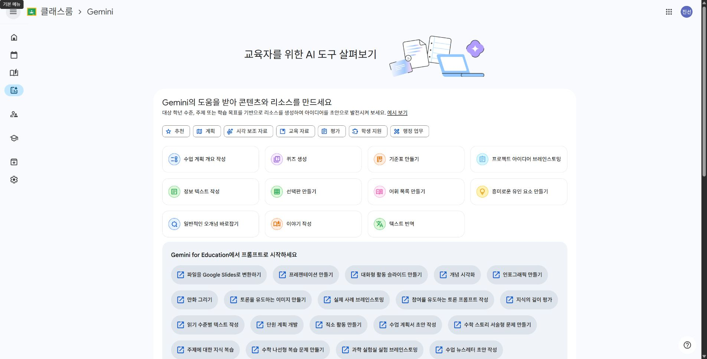
Classroom Gemini · 2026. 10. 13. · 교육용 Google 계정
- 학교 교사 계정
- Gemini 도구
- 수업 목적에 맞는 기능
따라 하기
- Classroom을 학교 교사 계정으로 엽니다.
- Gemini 도구 진입 메뉴를 찾습니다.
- 활동지·질문·평가 기준 등 필요한 도구를 선택합니다.
완료 확인
Classroom의 수업 자료 생성 진입점을 찾았습니다.
도구의 제공 여부는 교사 계정, 라이선스, 관리자 설정에 따라 확인합니다.
근거·도움말: Gemini in Classroom 공식 도움말
50 · Classroom Gemini
독서 활동의 조건을 입력합니다
고등학교 1학년의 학생 주도 발표·토론을 위한 질문을 요청합니다.
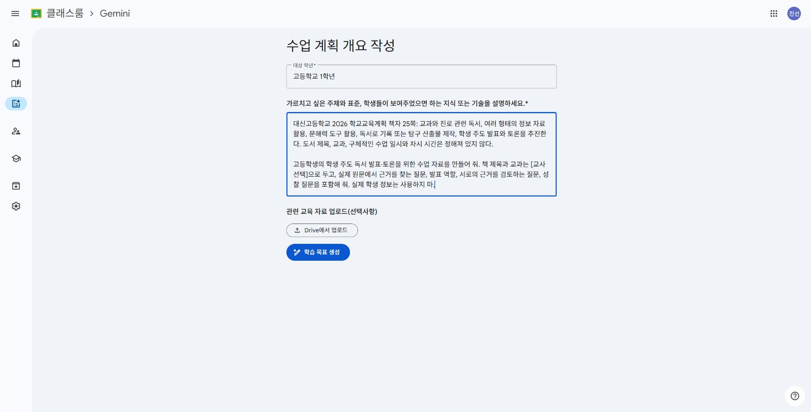
Classroom Gemini · 2026. 10. 13. · 교육용 Google 계정
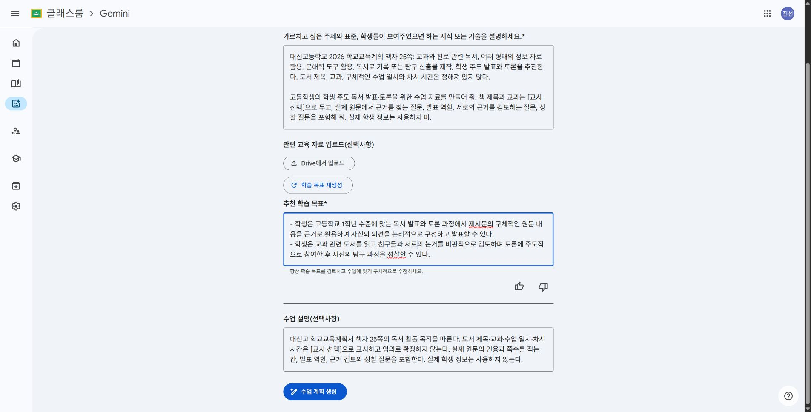
Classroom Gemini · 2026. 10. 13. · 교육용 Google 계정
- 대상은 고등학교 1학년
- 도서·교과는 교사 선택
- 실제 학생 정보 제외
따라 하기
- 대상 학년에 고등학교 1학년을 입력하고 주제·목적 항목을 읽습니다.
- 독서 활동 계획을 근거로 목적을 입력합니다.
- 특정 책이나 날짜를 추측하지 않도록 조건을 적습니다.
실습 문구
대신고등학교 2026 학교교육계획 책자 25쪽: 교과와 진로 관련 독서, 여러 형태의 정보 자료 활용, 문해력 도구 활용, 독서로 기록 또는 탐구 산출물 제작, 학생 주도 발표와 토론을 추진한다. 도서 제목, 교과, 구체적인 수업 일시와 차시 시간은 정해져 있지 않다. 고등학생의 학생 주도 독서 발표·토론을 위한 수업 자료를 만들어 줘. 책 제목과 교과는 [교사 선택]으로 두고, 실제 원문에서 근거를 찾는 질문, 발표 역할, 서로의 근거를 검토하는 질문, 성찰 질문을 포함해 줘. 실제 학생 정보는 사용하지 마.
완료 확인
생성 조건이 학교 독서 활동의 목적과 연결됩니다.
근거·도움말: Gemini in Classroom 공식 도움말
51 · Classroom Gemini
생성 자료를 수업에 맞게 고칩니다
생성한 자료를 바로 배포하기 전에 읽고 수정합니다.
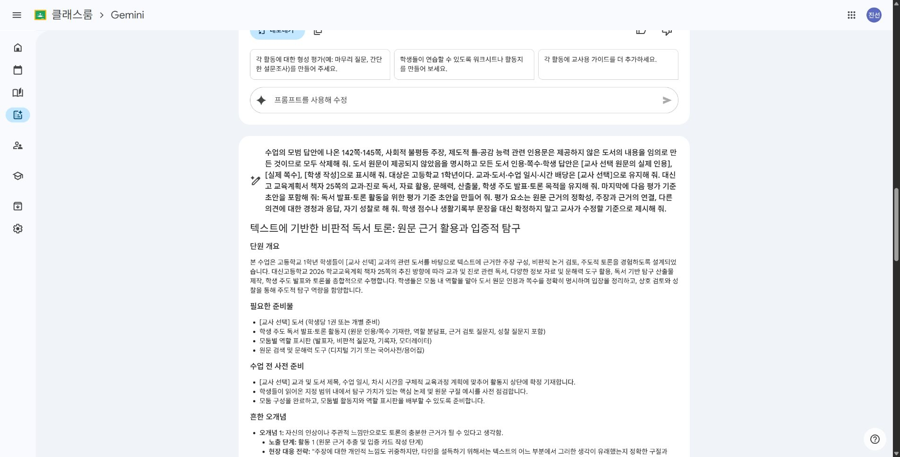
Classroom Gemini · 2026. 10. 13. · 교육용 Google 계정
- 질문 수준
- 원문 근거
- 교사가 최종 선택
따라 하기
- 생성된 질문을 읽습니다.
- 선정 도서와 학생 수준에 맞게 수정합니다.
- 학생에게 제공할 자료와 교사용 참고를 구분합니다.
완료 확인
교사가 검토한 수업 자료로 다듬었습니다.
근거·도움말: Gemini in Classroom 공식 도움말
52 · Classroom Gemini
발표·토론 평가 기준을 만듭니다
교사가 검토할 평가 요소를 준비합니다.
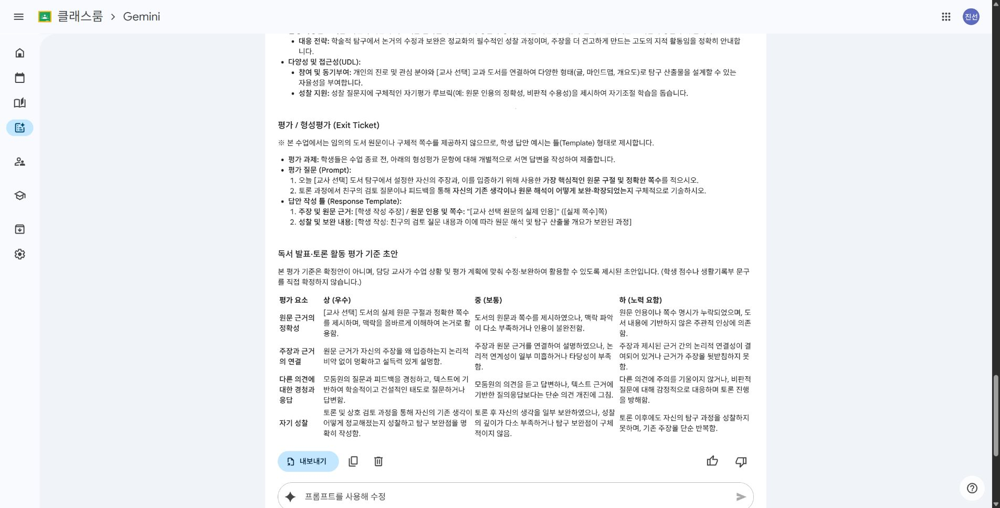
Classroom Gemini · 2026. 10. 13. · 교육용 Google 계정
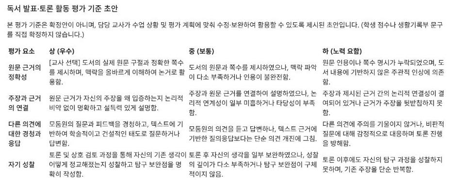
Classroom Gemini · 2026. 10. 13. · 교육용 Google 계정
- 근거의 정확성
- 의견에 대한 응답
- 자기 성찰
따라 하기
- 생성한 수업 자료의 수정 요청에 평가 기준 초안을 요청합니다.
- 원문 근거·주장과 근거의 연결·경청·성찰의 요소를 입력합니다.
- 생성된 기준을 실제 수업과 평가 방침에 맞게 수정합니다.
실습 문구
독서 발표·토론 활동을 위한 평가 기준 초안을 만들어 줘. 평가 요소는 원문 근거의 정확성, 주장과 근거의 연결, 다른 의견에 대한 경청과 응답, 자기 성찰로 해 줘. 학생 점수나 생활기록부 문장을 대신 확정하지 말고 교사가 수정할 기준으로 제시해 줘.
완료 확인
학생 정보 없이 교사가 검토할 평가 기준이 있습니다.
근거·도움말: Gemini in Classroom 공식 도움말
53 · Gemini Notebook
Notebook에서 자료를 근거로 질문합니다
Gemini로 만든 초안과 원문 소스를 연결해 확인합니다.

Gemini Notebook · 2026. 10. 13. · 교육용 Google 계정 · 화면에 PLUS 표시
- 노트북 만들기
- 소스 추가
- 소스 근거 확인
따라 하기
- 학교 계정으로 Gemini Notebook을 엽니다.
- 독서 활동을 위한 노트북을 만듭니다.
- 노트북 이름과 계정 상태를 확인합니다.
완료 확인
주제별로 자료와 질문을 모을 공간이 있습니다.
근거·도움말: Gemini Notebook 교육용 계정·한도 안내
54 · Gemini Notebook
학교 계정의 이용 조건을 확인합니다
Education Plus의 확대된 제공 범위를 살펴봅니다.
Gemini Notebook · 2026. 10. 13. · 교육용 Google 계정 · 화면에 PLUS 표시
- 학교 계정
- 라이선스 표시
- 기능과 한도 확인
따라 하기
- 프로필 주변의 이용 등급 표시를 확인합니다.
- 현재 계정의 소스와 생성 한도 안내를 읽습니다.
- 표시된 기능을 기준으로 사용할 도구를 정합니다.
완료 확인
개인 구독과 교육용 제공 범위를 구분합니다.
Google 공식 안내에서 Education Plus는 기본 계정보다 확대된 이용 범위를 제공합니다. 실제 배정 표시를 확인합니다.
근거·도움말: Gemini Notebook 교육용 계정·한도 안내
55 · Gemini Notebook
필요한 소스만 추가합니다
독서 활동 계획의 필요한 내용만 사용합니다.
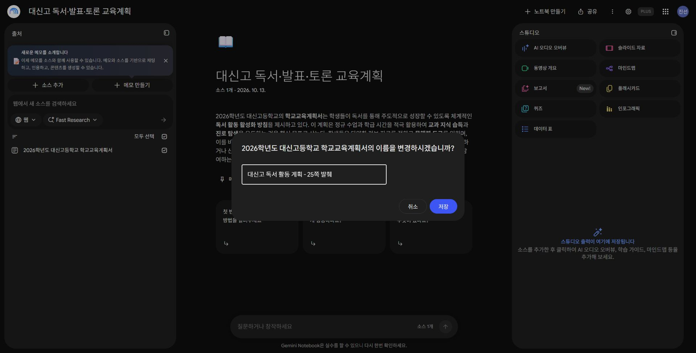
Gemini Notebook · 2026. 10. 13. · 교육용 Google 계정 · 화면에 PLUS 표시
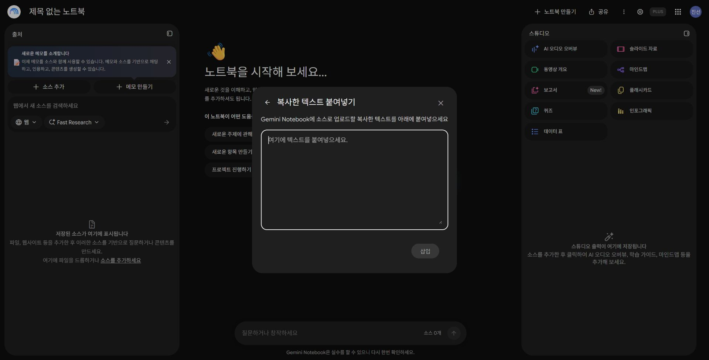
Gemini Notebook · 2026. 10. 13. · 교육용 Google 계정 · 화면에 PLUS 표시
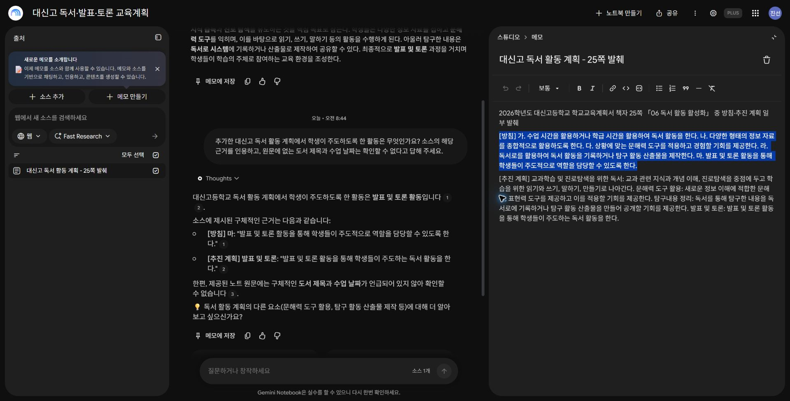
Gemini Notebook · 2026. 10. 13. · 교육용 Google 계정 · 화면에 PLUS 표시
- 책자 25쪽의 활동 계획
- 소스 이름
- 불필요한 개인정보 제외
따라 하기
- 소스 추가 메뉴를 엽니다.
- 독서 활동 목적과 추진 내용만 입력합니다.
- 소스 이름과 들어간 내용을 확인합니다.
실습 문구
대신고등학교 2026 학교교육계획 책자 25쪽: 교과와 진로 관련 독서, 여러 형태의 정보 자료 활용, 문해력 도구 활용, 독서로 기록 또는 탐구 산출물 제작, 학생 주도 발표와 토론을 추진한다. 도서 제목, 교과, 구체적인 수업 일시와 차시 시간은 정해져 있지 않다.
완료 확인
원문 근거와 소스 이름을 확인했습니다.
근거·도움말: Gemini Notebook 교육용 계정·한도 안내
56 · Gemini Notebook
소스를 근거로 질문합니다
학생 주도 활동과 원문에 없는 조건을 구분합니다.
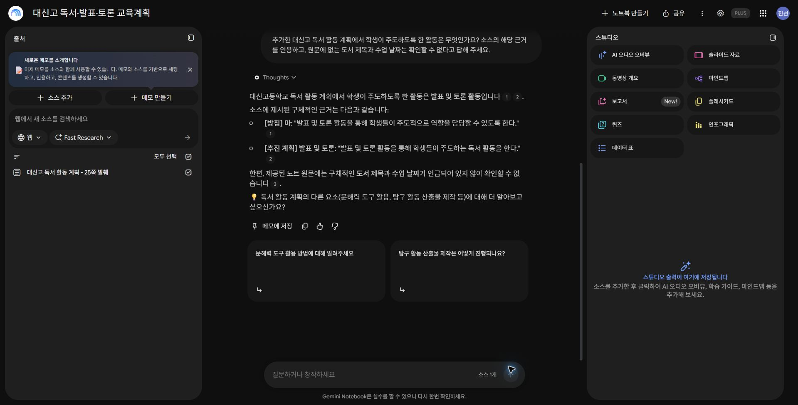
Gemini Notebook · 2026. 10. 13. · 교육용 Google 계정 · 화면에 PLUS 표시
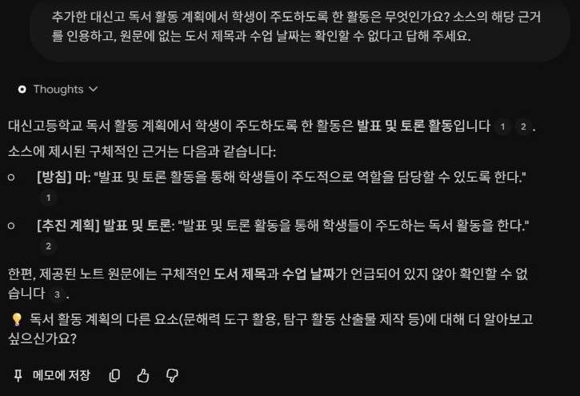
Gemini Notebook · 2026. 10. 13. · 교육용 Google 계정 · 화면에 PLUS 표시
- 선택한 소스
- 근거가 있는 답
- 알 수 없는 내용
따라 하기
- 질문에 사용할 소스를 선택합니다.
- 학생 주도 활동에 대한 질문문을 입력합니다.
- 답변이 도서 제목이나 수업 날짜를 추측했는지 확인합니다.
실습 문구
추가한 대신고 독서 활동 계획에서 학생이 주도하도록 한 활동은 무엇인가요? 소스의 해당 근거를 인용하고, 원문에 없는 도서 제목과 수업 날짜는 확인할 수 없다고 답해 주세요.
완료 확인
원문에서 확인한 내용과 확인하지 못한 내용이 구분됩니다.
근거·도움말: Gemini Notebook 교육용 계정·한도 안내
57 · Gemini Notebook
인용을 눌러 원문을 읽습니다
인용 표시가 있어도 실제 문맥을 확인합니다.
Gemini Notebook · 2026. 10. 13. · 교육용 Google 계정 · 화면에 PLUS 표시
- 인용 열기
- 해당 문장과 주변 문맥
- 답변과 비교
따라 하기
- 답변의 인용 표시를 선택합니다.
- 해당 소스의 문장과 주변 내용을 읽습니다.
- 답변이 원문의 의미를 바꾸지 않았는지 확인합니다.
완료 확인
인용 번호를 원문 내용과 연결해 확인했습니다.
근거·도움말: Gemini Notebook 교육용 계정·한도 안내
58 · Gemini Notebook
소스로 수업 준비 자료를 만듭니다
점검표·학습 자료 등의 생성 기능을 살펴봅니다.
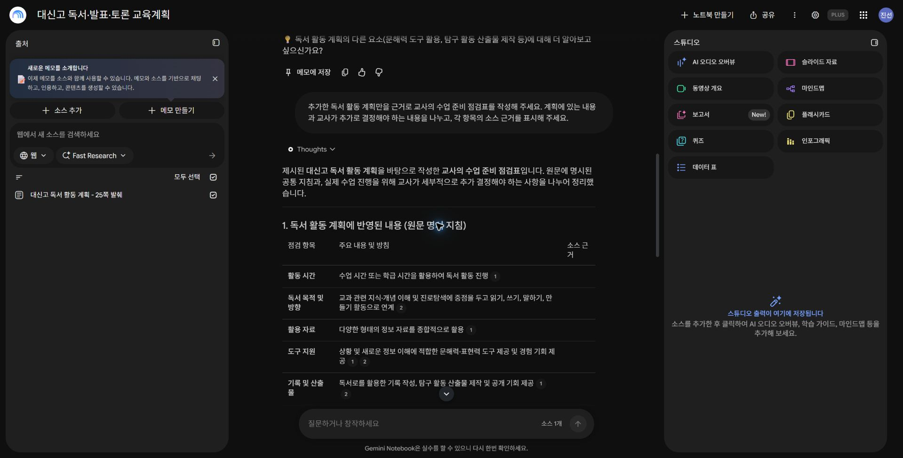
Gemini Notebook · 2026. 10. 13. · 교육용 Google 계정 · 화면에 PLUS 표시
- 소스 범위
- 보고서·학습 도구
- 교사 검토
따라 하기
- 필요한 생성 도구를 선택합니다.
- 소스에 있는 내용과 교사가 결정할 내용을 구분하도록 요청합니다.
- 결과의 근거와 빠진 내용을 검토합니다.
실습 문구
추가한 독서 활동 계획만을 근거로 교사의 수업 준비 점검표를 작성해 주세요. 계획에 있는 내용과 교사가 추가로 결정해야 하는 내용을 나누고, 각 항목의 소스 근거를 표시해 주세요.
완료 확인
소스에 기반한 준비 자료를 교사가 검토했습니다.
근거·도움말: Gemini Notebook 교육용 계정·한도 안내
59 · 쉬는 시간
쉬는 시간
Google 자료를 정리하고 Microsoft 계정을 준비합니다.
- 작성한 자료 위치 확인
- 학교 Microsoft 계정 확인
- 다음 순서: 가입 → Copilot → Office → OneDrive
따라 하기
- 작성한 문서의 저장 상태를 확인합니다.
- Microsoft 계정이 있다면 계정 정보를 본인이 확인합니다.
- 다음 안내를 시작할 준비를 합니다.
완료 확인
Google 안내를 마치고 Microsoft 안내를 이어갈 준비가 됐습니다.
60 · Microsoft 계정 생성
학교별 Microsoft 계정을 준비합니다
서울교육청 Microsoft 365 가입센터에서 발급 절차를 확인합니다.
서울교육청 Microsoft 365 가입센터 · 2026. 10. 14. · 공개 가입센터 화면
- 학교별 가입 절차
- 기존 계정 먼저 확인
- 교직원 계정
따라 하기
- 교육청 Microsoft 365 가입센터를 엽니다.
- 기존 학교 계정이 있는지 확인합니다.
- 계정이 없다면 교직원 가입 절차를 확인합니다.
완료 확인
계정이 있는 경우와 신규 가입이 필요한 경우를 구분합니다.
61 · Microsoft 계정 생성
대신고등학교를 선택합니다
학교명과 교육청 정보를 확인합니다.
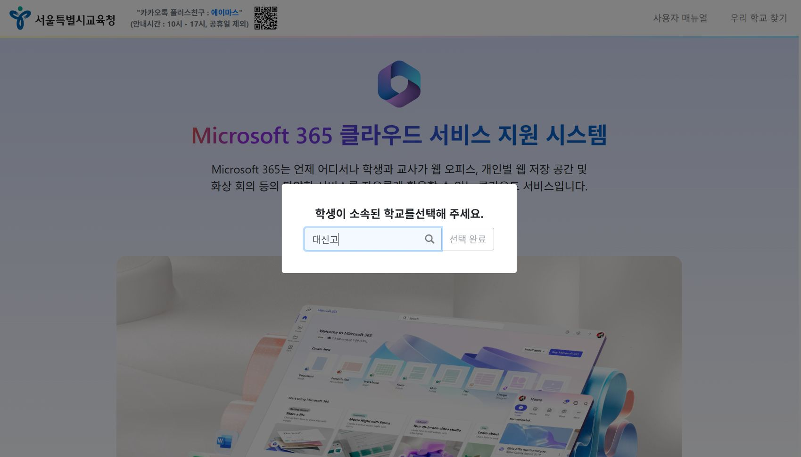
서울교육청 Microsoft 365 가입센터 · 2026. 10. 14. · 공개 가입센터 화면
- 대신고등학교
- 학교 검색
- 동일·유사 학교명 구분
따라 하기
- 학교 검색 항목을 엽니다.
- 대신고등학교를 검색합니다.
- 선택한 학교가 맞는지 다시 확인합니다.
완료 확인
대신고등학교를 선택했습니다.
62 · Microsoft 계정 생성
교직원 가입 절차를 선택합니다
학생 가입과 교직원 가입을 구분합니다.
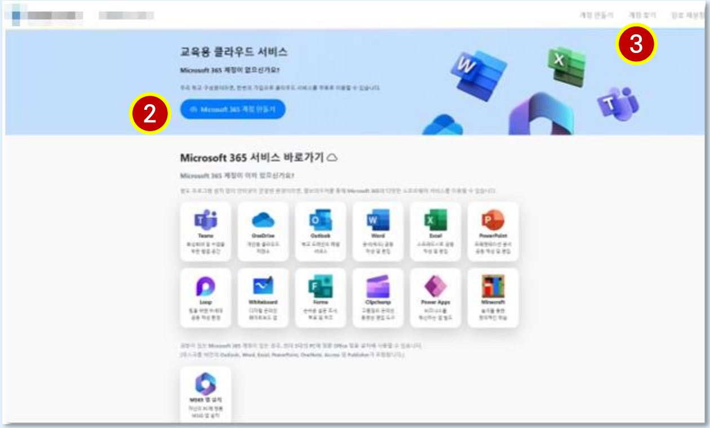
Microsoft 365 교육청 가이드 · 2026. 10. 14. 확인 · 공식 가이드의 예시 화면 · 공식 원문
Microsoft 365 교육청 가이드 · 2026. 10. 14. 확인 · 공식 가이드의 예시 화면 · 공식 원문
- 교직원 대상
- 안내와 약관 확인
- 본인 정보는 직접 입력
따라 하기
- 학교별 화면의 계정 만들기에서 교사를 선택합니다.
- 가입 안내와 약관을 읽습니다.
- 약관 동의 여부는 본인이 판단하고 진행합니다.
완료 확인
교직원용 절차를 선택했습니다.
계정 만들기 표시 여부는 학교 관리자의 설정에 따라 다를 수 있습니다. 가이드의 학생용 입력 예시와 교사의 입력 항목을 구분합니다.
63 · Microsoft 계정 생성
학교 가입 인증코드를 입력합니다
대신고등학교 대상 연수 자료에 제공된 인증코드입니다.
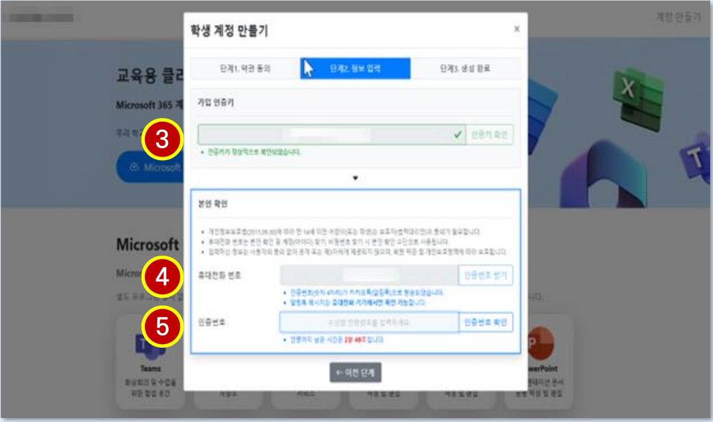
Microsoft 365 교육청 가이드 · 2026. 10. 14. 확인 · 공식 가이드의 예시 화면 · 공식 원문
- 대신고등학교
- 6337-18E6-4D58-44F7-AC2F
- 복사 후 학교명 확인
따라 하기
- 교안의 인증코드 복사 버튼을 사용합니다.
- 가입센터의 학교 인증코드 입력란에 붙여 넣습니다.
- 학교명과 코드가 맞는지 확인합니다.
학교 가입 인증코드
6337-18E6-4D58-44F7-AC2F
완료 확인
제공된 학교 인증코드를 확인했습니다.
64 · Microsoft 계정 생성
본인 인증을 진행합니다
인증 화면은 본인이 확인하고 완료합니다.
Microsoft 365 교육청 가이드 · 2026. 10. 14. 확인 · 공식 가이드의 예시 화면 · 공식 원문
- 본인 인증
- 실제 정보 확인
- 인증번호 노출 금지
따라 하기
- 가입 안내에 따라 본인 인증 절차를 엽니다.
- 개인 정보와 인증번호는 본인이 직접 입력합니다.
- 인증 완료 상태를 확인합니다.
완료 확인
본인의 인증 절차를 완료했는지 확인합니다.
65 · Microsoft 계정 생성
계정 정보를 본인이 정합니다
아이디 규칙과 필요한 항목을 읽습니다.
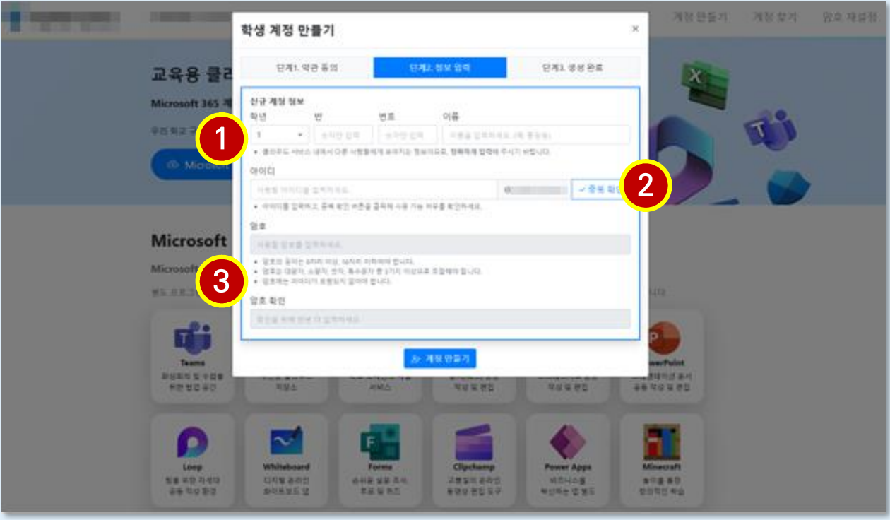
Microsoft 365 교육청 가이드 · 2026. 10. 14. 확인 · 공식 가이드의 예시 화면 · 공식 원문
- 아이디 규칙
- 입력 항목 확인
- 암호는 본인만 입력
따라 하기
- 교사용 성·이름 입력 항목과 계정명 규칙을 읽습니다.
- 중복 여부와 필수 입력 항목을 확인합니다.
- 암호와 개인 인증 정보는 본인이 직접 입력합니다.
완료 확인
계정명과 인증 정보를 구분합니다.
66 · Microsoft 계정 생성
가입 완료 안내를 읽습니다
계정명과 로그인 경로를 확인합니다.
Microsoft 365 교육청 가이드 · 2026. 10. 14. 확인 · 공식 가이드의 예시 화면 · 공식 원문
- 완료 상태
- 학교 계정명
- 로그인 안내
따라 하기
- 가입 완료 안내를 읽습니다.
- 발급된 계정명을 본인이 기록합니다.
- 로그인 경로와 추가 안내를 확인합니다.
완료 확인
발급된 학교 계정의 로그인 방법을 알 수 있습니다.
67 · Microsoft 계정 생성
Microsoft에 학교 계정으로 로그인합니다
개인 Microsoft 계정과 조직 계정을 구분합니다.
Microsoft 365 교육청 가이드 · 2026. 10. 14. 확인 · 공식 가이드의 예시 화면 · 공식 원문
- 학교 계정
- 회사 또는 학교 계정
- 계정 표시 확인
따라 하기
- Microsoft 365를 엽니다.
- 학교에서 발급한 계정으로 로그인합니다.
- 회사 또는 학교 계정의 표시를 확인합니다.
완료 확인
학교 조직 계정으로 로그인했습니다.
68 · Microsoft 계정 생성
실제 배정 제품을 확인합니다
교사용 A3 안내와 본인 계정의 실제 제품을 대조합니다.
- 교사용 A3 기준
- 본인 계정의 제품
- 설치·서비스 권한
따라 하기
- 내 계정의 구독 또는 배정 제품 메뉴를 엽니다.
- 교사용 A3 등 실제 제품 이름을 확인합니다.
- Office 설치와 OneDrive·Copilot 사용 항목을 확인합니다.
완료 확인
예상 라이선스와 실제 배정 제품을 구분합니다.
이 연수는 교사용 A3 배정을 기준으로 안내합니다. 자신의 계정에 표시된 실제 제품과 학교 설정을 확인합니다.
근거·도움말: 내 Microsoft 365 제품·라이선스 확인
69 · Copilot
학교 Microsoft 계정으로 Copilot을 사용합니다
학교 계정의 Copilot Chat을 엽니다.
Microsoft Copilot · 2026. 10. 14. 제공 · 사용자 제공 학교 계정 화면
Microsoft Copilot · 2026. 10. 14. 제공 · 사용자 제공 학교 계정 화면
- 학교 계정 로그인
- Copilot Chat
- 계정별 기능 확인
따라 하기
- Copilot을 엽니다.
- 학교 Microsoft 계정으로 로그인했는지 확인합니다.
- 새 대화 화면과 제공 도구를 확인합니다.
완료 확인
학교 계정으로 Copilot Chat에 접근했습니다.
근거·도움말: Microsoft Copilot Chat 제공 조건
70 · Copilot
학교 계정의 보호 표시를 확인합니다
로그인 계정과 서비스의 데이터 보호 조건을 읽습니다.
Microsoft Copilot · 2026. 10. 14. 제공 · 사용자 제공 학교 계정 화면
Microsoft Copilot · 2026. 10. 14. 제공 · 사용자 제공 학교 계정 화면
- 계정 표시
- 보호 조건
- 입력 자료의 범위
따라 하기
- 화면의 계정 표시와 보호 안내를 확인합니다.
- 입력하려는 자료에 학생 개인정보가 있는지 봅니다.
- 활동 목적에 필요한 교육계획 내용만 사용합니다.
완료 확인
학교 계정 표시와 입력할 자료의 범위를 확인했습니다.
근거·도움말: Copilot의 계정·라이선스별 참조 자료
71 · Copilot
응답 방식을 선택합니다
현재 계정에 보이는 응답 옵션을 확인합니다.
Microsoft Copilot · 2026. 10. 14. 제공 · 사용자 제공 학교 계정 화면
Microsoft Copilot · 2026. 10. 14. 제공 · 사용자 제공 학교 계정 화면
- 자동
- 빠른 응답
- 깊이 생각하기
따라 하기
- 새 대화의 응답 방식 메뉴를 엽니다.
- 현재 보이는 선택 항목을 읽습니다.
- 요청의 목적에 맞는 응답 방식을 고릅니다.
완료 확인
자신의 화면에 제공되는 응답 방식을 알 수 있습니다.
모델 이름과 선택 항목은 서비스 개편·계정·라이선스에 따라 달라질 수 있습니다. 화면의 현재 표시를 확인합니다.
근거·도움말: Microsoft Copilot Chat 제공 조건
72 · Copilot
디지털 시민성 교육의 근거를 입력합니다
학교 계획의 출처 확인 활동을 수업 자료와 연결합니다.
- 책자 140쪽
- 출처·작성자·근거
- 1학년 정보·AI기초
따라 하기
- 학교 디지털 역량 교육 계획을 읽습니다.
- 실제 학생 정보 없이 활동 목적을 입력합니다.
- 구체적인 수업 날짜는 정해지지 않았음을 확인합니다.
실습 문구
대신고등학교 2026 학교교육계획 책자 140쪽: 디지털 안전·공존·책임을 바탕으로 디지털 시민성을 기른다. 정보의 출처·작성자·근거를 확인하고 가짜 뉴스와 확증편향을 비판적으로 검토한다. 생성형 AI의 원리·편향성·저작권을 다룬다. 1학년은 정보·인공지능기초, 2학년은 창체, 3학년은 인공지능기초 시간을 활용한다. AI·디지털 역량 교육 주간의 구체적인 날짜는 이 자료에 적혀 있지 않다.
완료 확인
활동지의 학교교육계획 근거가 있습니다.
근거·도움말: 대신고 2026 학교교육계획 · 책자 25·76·140쪽
73 · Copilot
출처 확인 활동지를 요청합니다
학생이 실제 자료를 읽고 채우는 양식을 만듭니다.
- 자료 제목·작성자
- 주장·근거
- 확인할 질문
따라 하기
- 교안의 Copilot 요청문을 읽습니다.
- 학교 계획과 필요한 양식을 함께 입력합니다.
- 실제 뉴스나 학생 답변을 임의로 만들지 않도록 확인합니다.
실습 문구
대신고등학교 2026 학교교육계획 책자 140쪽: 디지털 안전·공존·책임을 바탕으로 디지털 시민성을 기른다. 정보의 출처·작성자·근거를 확인하고 가짜 뉴스와 확증편향을 비판적으로 검토한다. 생성형 AI의 원리·편향성·저작권을 다룬다. 1학년은 정보·인공지능기초, 2학년은 창체, 3학년은 인공지능기초 시간을 활용한다. AI·디지털 역량 교육 주간의 구체적인 날짜는 이 자료에 적혀 있지 않다. 이 계획을 바탕으로 고등학교 1학년의 ‘출처·작성자·근거 확인’ 활동지 초안을 만들어 줘. 실제 학생 자료나 출처를 확인하지 않은 뉴스는 사용하지 말고, 학생이 교사가 고른 실제 자료를 읽어 작성할 빈 양식으로 만들어 줘. 항목은 자료의 제목과 출처, 작성자와 작성 시점, 주장, 확인 가능한 근거, 추가로 확인할 질문, 최종 판단으로 해 줘. 주어진 교육계획에 없는 수업 날짜는 정하지 마.
완료 확인
교사가 선택할 실제 자료에 적용할 활동지 초안이 있습니다.
근거·도움말: Microsoft Copilot Chat 제공 조건
74 · Copilot
응답을 원문 기준으로 검토합니다
AI 응답의 문장도 근거를 확인합니다.
- 교육계획과 비교
- 사실과 의견
- 근거가 없는 주장
따라 하기
- 활동지 항목이 계획의 출처 확인 목적과 연결되는지 봅니다.
- 없는 뉴스나 출처가 만들어졌는지 확인합니다.
- AI의 주장 자체를 근거로 삼은 부분을 고칩니다.
완료 확인
교사가 확인해야 할 내용을 찾았습니다.
근거·도움말: Microsoft Copilot Chat 제공 조건
75 · Copilot
활동지의 질문을 다듬습니다
사실과 의견을 구분하는 질문을 더합니다.
- 수정할 항목 지정
- 검증 가능한 근거
- 추가 확인 질문
따라 하기
- 고칠 부분을 구체적으로 정합니다.
- 수정 요청문을 입력합니다.
- 학생이 근거를 찾아 답할 수 있도록 바뀌었는지 확인합니다.
실습 문구
활동지를 검토해 줘. 사실과 의견, 출처가 있는 주장과 출처를 확인하지 못한 주장을 구분하도록 질문을 다듬어 줘. AI 응답 자체를 근거로 삼지 않도록 확인 항목을 넣어 줘.
완료 확인
활동지의 검증 질문을 개선했습니다.
근거·도움말: Microsoft Copilot Chat 제공 조건
76 · Copilot
교육용 학습 기능을 살펴봅니다
학습을 돕는 도구가 있으면 단계별 질문에 활용합니다.
Microsoft Copilot · 2026. 10. 14. 제공 · 사용자 제공 학교 계정 화면
Microsoft Copilot · 2026. 10. 14. 제공 · 사용자 제공 학교 계정 화면
- 교육·학습 도구
- 질문을 단계별로
- 학생 사고를 돕기
따라 하기
- 현재 계정의 교육·학습 메뉴를 확인합니다.
- Study and Learn 등 제공되는 도구를 엽니다.
- 자료가 없는 상태에서는 실제 기사나 학생 답을 만들지 않도록 요청합니다.
실습 문구
출처 확인을 어려워하는 고등학생에게 질문을 한 번에 하나씩 제시해 줘. 학생이 자료의 제목·작성자·작성 시점·주장의 근거를 직접 찾도록 이끌어 줘. 실제 자료가 제공되지 않았으므로 특정 기사나 학생 답변을 만들어 내지 마.
완료 확인
학생이 근거를 직접 찾도록 돕는 요청을 이해했습니다.
근거·도움말: Study and Learn 공식 안내
77 · Copilot
Copilot Chat과 Office 기능을 구분합니다
채팅의 제공 범위와 앱 안의 추가 AI 기능은 별도로 확인합니다.
- Copilot Chat
- Office 앱 안의 AI
- 실제 라이선스·학교 설정
| 범위 | 확인할 내용 |
|---|---|
| Copilot Chat | 학교 계정·제공 메뉴·이용 한도 |
| Office 데스크톱·웹 앱 | 배정 제품·앱 설치 권한 |
| 앱 안의 추가 Copilot 기능 | 별도 라이선스·학교 설정·현재 제공 표시 |
따라 하기
- 현재 계정에서 제공되는 Copilot Chat을 확인합니다.
- Word·Excel 등 앱 안의 Copilot 제공 여부를 따로 봅니다.
- 추가 라이선스가 필요한 기능인지 확인합니다.
완료 확인
학교 A3만으로 모든 Office AI 기능이 제공된다고 해석하지 않습니다.
근거·도움말: Copilot의 계정·라이선스별 참조 자료
78 · Office 365
웹 앱과 데스크톱 앱을 사용합니다
학교 계정의 Office 앱을 확인합니다.
Microsoft 365 · 2026. 10. 13. · 학교에서 발급한 Microsoft 계정
- Word·Excel·PowerPoint
- 브라우저에서 사용
- PC에 설치해 사용
따라 하기
- Microsoft 365의 앱 목록을 엽니다.
- 웹에서 열 수 있는 앱을 확인합니다.
- 앱 설치 메뉴가 있는지 확인합니다.
완료 확인
웹 앱과 설치하는 앱의 차이를 알 수 있습니다.
근거·도움말: Microsoft 365 A3·앱 설치 수 안내
79 · Office 365
본인이 사용하는 PC/Mac 최대 5대
교사용 A3의 설치 조건을 확인합니다.
- PC/Mac 합계 최대 5대
- 본인의 이용 기기
- 학교 계정으로 인증
따라 하기
- 실제 배정 제품에 데스크톱 앱 권한이 있는지 확인합니다.
- 본인이 사용할 PC 또는 Mac인지 확인합니다.
- 설치 가능 기기 수와 현재 로그인 상태를 확인합니다.
완료 확인
여러 사람에게 계정을 나눠 쓰는 설치권으로 해석하지 않습니다.
근거·도움말: Microsoft 365 A3·앱 설치 수 안내
80 · Office 365
Office 설치 메뉴를 엽니다
설치 가능 여부는 자신의 계정에서 확인합니다.
Microsoft 365 · 2026. 10. 13. · 학교에서 발급한 Microsoft 계정
Microsoft 365 · 2026. 10. 13. · 학교에서 발급한 Microsoft 계정
- 앱 설치
- 배정 제품
- 관리자 허용
따라 하기
- Microsoft 365의 앱 설치 메뉴를 엽니다.
- 표시된 설치 항목을 확인합니다.
- 메뉴가 없다면 계정·제품·학교의 설치 허용을 확인합니다.
완료 확인
설치할 앱의 제공 조건을 확인했습니다.
근거·도움말: Microsoft 365 PC 설치 공식 안내
81 · Office 365
언어와 설치 항목을 확인합니다
설치할 앱과 현재 PC 환경을 확인합니다.
Microsoft 365 교육청 가이드 · 2026. 10. 14. 확인 · 공식 가이드의 예시 화면 · 공식 원문
- 표시 언어
- 설치할 앱
- 기존 Office 확인
따라 하기
- 설치 화면의 언어와 제공 옵션을 읽습니다.
- PC에 기존 Office가 있는지 확인합니다.
- 학교 장비의 설치 절차에 맞게 진행합니다.
완료 확인
현재 PC의 설치 조건을 확인했습니다.
근거·도움말: Microsoft 365 PC 설치 공식 안내
82 · Office 365
공식 설치 파일로 설치합니다
설치 진행 상태와 완료 안내를 확인합니다.
Microsoft 365 교육청 가이드 · 2026. 10. 14. 확인 · 공식 가이드의 예시 화면 · 공식 원문
- 공식 다운로드
- 설치 진행
- 완료 안내
따라 하기
- 학교 계정의 공식 설치 메뉴에서 파일을 받습니다.
- 학교 장비 정책에 따라 설치를 진행합니다.
- 설치 완료 안내를 확인합니다.
완료 확인
공식 경로의 설치 절차를 이해했습니다.
근거·도움말: Microsoft 365 PC 설치 공식 안내
83 · Office 365
학교 계정으로 Office를 인증합니다
앱의 계정과 활성화 상태를 확인합니다.
Microsoft 365 교육청 가이드 · 2026. 10. 14. 확인 · 공식 가이드의 예시 화면 · 공식 원문
- 학교 계정 로그인
- 제품 정보
- 활성화 상태
따라 하기
- Word 등 설치한 앱을 엽니다.
- 계정 메뉴에서 학교 계정인지 확인합니다.
- 제품 정보와 활성화 상태를 확인합니다.
완료 확인
앱 설치와 라이선스 인증을 구분합니다.
근거·도움말: Office Windows 활성화 공식 안내
84 · Office 365
웹 Word에서 활동지를 편집합니다
Copilot에서 검토한 출처 확인 양식을 문서로 정리합니다.
Word 웹 · 2026. 10. 13. · 학교에서 발급한 Microsoft 계정
Word 웹 · 2026. 10. 13. · 학교에서 발급한 Microsoft 계정
Word 웹 · 2026. 10. 13. · 학교에서 발급한 Microsoft 계정
- 활동지 제목
- 학생 작성 칸
- 교사 검토
따라 하기
- OneDrive 또는 Office 웹 앱에서 Word 문서를 엽니다.
- 출처 확인 활동지의 검토된 문구를 입력합니다.
- 제목·표·작성 칸을 수업에 맞게 고칩니다.
완료 확인
AI 초안을 교사가 편집한 수업 문서로 정리했습니다.
근거·도움말: Microsoft 365 A3·앱 설치 수 안내
85 · Office 365
배포할 파일을 다시 확인합니다
PDF·Word 등 목적에 맞는 파일을 확인합니다.
- 내용·표 확인
- 다운로드 형식
- 출처 확인
따라 하기
- 문서의 제목과 출처 확인 항목을 읽습니다.
- 필요한 형식으로 다운로드합니다.
- 받은 파일을 열어 표와 작성 칸이 유지되는지 확인합니다.
완료 확인
배포할 파일의 내용과 형식을 확인했습니다.
근거·도움말: Microsoft 365 A3·앱 설치 수 안내
86 · OneDrive
학교 Microsoft 계정의 OneDrive
학교별 발급 계정의 안내 용량은 1TB입니다.
OneDrive · 2026. 10. 13. · 학교에서 발급한 Microsoft 계정
- 학교 Microsoft 계정
- 1TB 안내
- 실제 용량 확인
따라 하기
- 학교 Microsoft 계정으로 OneDrive를 엽니다.
- 저장 공간의 사용량과 용량을 확인합니다.
- 개인 Microsoft 계정의 용량과 구분합니다.
완료 확인
학교 계정의 OneDrive 저장 공간을 확인했습니다.
이 학교 계정은 1TB를 기준으로 안내합니다. 실제 배정 제품과 학교의 저장 공간 설정을 확인합니다.
87 · OneDrive
디지털 시민성 자료를 모읍니다
활동지 파일을 찾기 쉬운 폴더에 둡니다.
OneDrive · 2026. 10. 13. · 학교에서 발급한 Microsoft 계정
- 자료 폴더
- 파일 이름
- 학교 계정 확인
따라 하기
- 학교 OneDrive에서 폴더 만들기를 엽니다.
- 디지털 시민성 자료임을 알 수 있는 이름을 입력합니다.
- 생성된 폴더와 계정을 확인합니다.
완료 확인
자료 폴더를 다시 찾을 수 있습니다.
88 · OneDrive
파일을 업로드합니다
PC에서 만든 자료를 학교 저장 공간에 보관합니다.
OneDrive · 2026. 10. 14. · 학교에서 발급한 Microsoft 계정
- 대상 폴더
- 파일 선택
- 업로드 완료
따라 하기
- 활동지 폴더를 엽니다.
- 업로드 메뉴에서 준비한 파일을 선택합니다.
- 파일 이름과 완료 상태를 확인합니다.
완료 확인
학교 계정의 폴더에 파일이 있습니다.
89 · OneDrive
웹에서 열어 수정합니다
Word 등의 웹 앱에서 문서를 이어서 편집합니다.
Word 웹 · 2026. 10. 13. · 학교에서 발급한 Microsoft 계정
Word 웹 · 2026. 10. 13. · 학교에서 발급한 Microsoft 계정
- OneDrive에서 열기
- 웹 앱 편집
- 저장 상태
따라 하기
- 편집할 문서를 선택합니다.
- 웹 앱으로 열어 활동지 질문을 수정합니다.
- 저장 상태를 확인하고 목록으로 돌아옵니다.
완료 확인
OneDrive의 문서를 웹 앱에서 수정했습니다.
90 · OneDrive
파일을 내려받습니다
보관한 자료를 PC에서 다시 사용합니다.
OneDrive · 2026. 10. 14. · 학교에서 발급한 Microsoft 계정
- 다운로드
- 파일 형식
- 받은 파일 확인
따라 하기
- 내려받을 파일을 선택합니다.
- 다운로드 메뉴를 엽니다.
- PC에서 파일을 열어 내용과 형식을 확인합니다.
완료 확인
학교 저장 공간의 자료를 PC에서 열 수 있습니다.
91 · OneDrive
세 저장 공간의 차이를 기억합니다
같은 보관 작업도 계정과 쓰기 기능을 구분합니다.
- WORKS: 500GB
- Google: 200GB
- 학교 OneDrive: 1TB
| 학교 계정의 저장 공간 | 안내 용량 | 주요 사용 |
|---|---|---|
| WORKS Drive | 500GB | 업로드·보기·다운로드 |
| Google Drive | 200GB | 업로드·보기·웹 문서 쓰기·다운로드 |
| OneDrive | 1TB | 학교 MS 계정으로 보관·Office 웹 앱 연결 |
따라 하기
- 보관할 파일과 편집할 문서를 구분합니다.
- 계정과 저장 공간을 확인합니다.
- 작업 목적에 맞는 저장 공간을 고릅니다.
완료 확인
세 저장 공간의 안내 용량과 사용 범위를 구분합니다.
92 · SenGPT · 나만의 에이전트
SenGPT에서 학교 업무 초안을 만듭니다
나만의 에이전트를 만들고 같은 흐름에서 예약까지 살펴봅니다.
SenGPT · 2026. 10. 14. 제공 · 사용자 제공 학교 계정 화면
SenGPT · 2026. 10. 14. 제공 · 사용자 제공 학교 계정 화면
- 학교 계정
- 교육활동 안내 초안
- 에이전트 → 대화 → 예약
개념도
학교교육계획 근거 → 나만의 에이전트 → 질문·수정 → 같은 에이전트의 예약
따라 하기
- 학교 계정으로 SenGPT를 엽니다.
- 대화와 나만의 에이전트 메뉴를 확인합니다.
- 학술탐구의 날 안내와 준비 점검에 활용합니다.
완료 확인
마지막 단계까지 같은 학교 활동 예시로 이어갑니다.
93 · SenGPT · 나만의 에이전트
월 지원액과 갱신일을 확인합니다
사용량은 금액 기준의 지원액으로 안내합니다.
SenGPT · 2026. 10. 14. 제공 · 사용자 제공 학교 계정 화면
SenGPT · 2026. 10. 14. 제공 · 사용자 제공 학교 계정 화면
- 일반 교사: 월 3만 원
- 지원단: 월 6만 원
- 매월 1일 갱신
| 대상 | 월 지원액 | 갱신 |
|---|---|---|
| 일반 교사 | 30,000원 | 매월 1일 |
| 지원단 | 60,000원 | 매월 1일 |
따라 하기
- 본인 계정의 지원액과 잔여 사용량을 확인합니다.
- 일반 교사와 지원단의 지원액을 구분합니다.
- 매월 1일 갱신 기준을 확인합니다.
완료 확인
금액 지원액을 고정 토큰 수로 해석하지 않습니다.
94 · SenGPT · 나만의 에이전트
현재 사용할 모델을 확인합니다
모델과 입력·출력에 따라 사용량이 달라집니다.
SenGPT · 2026. 10. 14. 제공 · 사용자 제공 학교 계정 화면
SenGPT · 2026. 10. 14. 제공 · 사용자 제공 학교 계정 화면
- 모델 선택
- 지원액·잔여량
- 목적에 맞는 요청
따라 하기
- 모델 선택 메뉴를 엽니다.
- 본인 계정에서 사용할 수 있는 모델을 확인합니다.
- 필요한 결과의 목적과 분량을 정해 요청합니다.
완료 확인
같은 지원액이 고정된 질문 횟수라는 뜻은 아님을 알 수 있습니다.
95 · SenGPT · 나만의 에이전트
나만의 에이전트를 엽니다
역할과 반복할 기준을 저장하는 공간입니다.
SenGPT · 2026. 10. 14. 제공 · 사용자 제공 학교 계정 화면
SenGPT · 2026. 10. 14. 제공 · 사용자 제공 학교 계정 화면
- 에이전트 목록
- 역할·지시문
- 반복할 업무
따라 하기
- 나만의 에이전트 메뉴를 엽니다.
- 기존 목록과 새 에이전트 만들기 항목을 확인합니다.
- 반복할 업무를 학술탐구 안내와 준비 점검으로 정리합니다.
완료 확인
일반 대화와 역할을 저장한 에이전트를 구분합니다.
근거·도움말: SenGPT 에이전트 공식 안내
96 · SenGPT · 나만의 에이전트
대신고 교육활동 도우미를 만듭니다
이름에서 학교와 역할이 드러나게 합니다.
- 대신고 교육활동 도우미
- 안내문·준비 점검
- 공개 범위 확인
따라 하기
- 새 에이전트 만들기를 엽니다.
- 이름을 대신고 교육활동 도우미로 입력합니다.
- 설명과 공개 범위에 어떤 항목이 있는지 확인합니다.
완료 확인
에이전트의 학교와 역할을 알 수 있습니다.
근거·도움말: SenGPT 에이전트 공식 안내
97 · SenGPT · 나만의 에이전트
교육계획의 사실을 지시문에 넣습니다
확정·예정·미정을 구분하는 기준을 저장합니다.
- 날짜·시작 시각·대상
- 장소는 예정
- 없는 사실은 질문
따라 하기
- 교안의 에이전트 지시문을 읽습니다.
- 학술탐구의 날 사실과 미확인 항목을 확인합니다.
- 지시문 입력란에 붙여 넣고 전체 내용을 검토합니다.
에이전트 지시문
당신은 대신고등학교 교사가 검토할 교육활동 안내문과 준비 점검표의 초안을 돕습니다. 아래 학교교육계획의 사실을 기준으로 사용자의 요청에 답하세요. 대신고등학교 2026 학교교육계획 책자 76쪽: 학술탐구의 날은 2026년 11월 6일(금) 09:00부터 운영한다. 대상은 고등학교 1·2학년이다. 장소는 1학년 과천국립과학관, 2학년 국립중앙박물관으로 예정되어 있다. 학생은 자신만의 테마를 선정하여 보고서를 작성한 뒤 제출한다. 이동 방법, 준비물, 행사 종료 시각, 보고서 제출 기한은 이 자료에 적혀 있지 않다. 확인된 사실, 예정된 내용, 아직 확인되지 않은 내용을 구분하세요. 장소의 ‘예정’ 표현을 유지하세요. 원문에 없는 이동 방법, 준비물, 종료 시각, 제출 기한을 만들지 마세요. 필요한 정보가 없으면 필요한 항목을 묶어서 질문하세요. 미정인 채로 초안을 요청하면 [확인 필요]로 표시하세요. 학생 이름·연락처·성적 등 개인 자료를 요청하지 마세요. 안내문은 제목 1개와 짧고 쉬운 한국어 본문으로 작성하고, 점검표는 점검 항목·근거·확인할 내용으로 정리하세요. 초안 작성과 실제 발송을 구분하세요.
완료 확인
지시문에 사실 근거와 추측하지 않을 항목이 있습니다.
근거·도움말: 대신고 2026 학교교육계획 · 책자 25·76·140쪽
98 · SenGPT · 나만의 에이전트
저장 전 역할과 범위를 확인합니다
원문에 없는 내용을 만들지 않도록 기준을 점검합니다.
- 역할·이름
- 입력한 지시문
- 공개 범위
따라 하기
- 이름과 설명이 지시문과 일치하는지 확인합니다.
- 지시문 끝까지 읽어 누락을 확인합니다.
- 공개 범위를 확인한 뒤 저장합니다.
완료 확인
의도한 기준으로 에이전트를 저장했습니다.
근거·도움말: SenGPT 에이전트 공식 안내
99 · SenGPT · 나만의 에이전트
저장한 에이전트를 다시 엽니다
목록에서 찾고 지시문이 유지되는지 확인합니다.
- 목록의 이름
- 저장한 역할
- 새 대화 진입
따라 하기
- 나만의 에이전트 목록으로 돌아갑니다.
- 대신고 교육활동 도우미를 찾습니다.
- 설정과 지시문이 저장됐는지 확인합니다.
완료 확인
저장한 에이전트를 다시 사용할 수 있습니다.
100 · SenGPT · 나만의 에이전트
안내문 초안을 요청합니다
제목과 본문에 교육계획의 사실을 담습니다.
- 날짜·대상 포함
- 장소는 예정
- 확인할 사항 분리
따라 하기
- 대신고 교육활동 도우미에서 대화를 엽니다.
- 안내문 초안 요청문을 입력합니다.
- 응답의 사실과 예정 표현을 확인합니다.
실습 문구
교육계획에 근거해 학술탐구의 날 교직원 안내문 초안을 작성해 줘. 계획서의 날짜·시작 시각·대상 학년을 넣고, 두 장소는 예정으로 표시해 줘. 자료에 없는 준비물이나 제출 기한은 정하지 말고 확인할 사항으로 따로 적어 줘.
완료 확인
교육계획에 근거한 안내문 초안을 받았습니다.
101 · SenGPT · 나만의 에이전트
AI가 추가한 사실이 있는지 봅니다
읽기 쉬운 문장과 사실의 정확성을 함께 확인합니다.
- 원문과 비교
- 예정 표현
- 미확인 항목
따라 하기
- 날짜·시작 시각·대상을 교육계획과 대조합니다.
- 예정 장소가 확정 장소로 바뀌지 않았는지 확인합니다.
- 종료 시각·준비물·이동·제출 기한이 만들어졌는지 봅니다.
완료 확인
학교 안내로 쓰기 전에 고칠 부분을 찾았습니다.
근거·도움말: 대신고 2026 학교교육계획 · 책자 25·76·140쪽
102 · SenGPT · 나만의 에이전트
같은 에이전트로 점검표를 만듭니다
역할을 다시 설명하지 않고 다른 형식을 요청합니다.
- 같은 교육계획 기준
- 점검 항목
- 확인할 내용
따라 하기
- 같은 에이전트의 대화에서 점검표를 요청합니다.
- 계획에 있는 사실과 추가 확인할 조건을 나누도록 적습니다.
- 항목별 근거와 확인할 내용을 읽습니다.
실습 문구
같은 학술탐구의 날을 준비하는 교사의 점검표를 만들어 줘. 확인된 사실을 먼저 정리하고, 계획서에 없는 이동 방법·준비물·종료 시각·보고서 제출 기한은 각각 확인할 내용으로 남겨 줘.
완료 확인
같은 역할을 안내문과 점검표에 적용했습니다.
103 · SenGPT · 나만의 에이전트
수정 요청으로 마지막 검토를 합니다
유지할 사실과 바꿀 형식을 구체적으로 적습니다.
- 예정 표현 유지
- 본문 5문장 이내
- 확인할 사항 분리
따라 하기
- 교안의 검토·수정 요청문을 입력합니다.
- 수정된 안내문과 점검표를 이전 결과와 비교합니다.
- 추측한 조건이 지워졌는지 확인합니다.
실습 문구
지금 만든 안내문과 점검표를 다시 검토해 줘. 원문에 없는 사실을 추가했는지, 장소의 예정 표현을 유지했는지 확인해 줘. 안내문 본문은 5문장 이내로 다듬고 확인할 사항은 본문과 분리해 줘.
완료 확인
수정 요청의 기준이 결과에 반영됐습니다.
104 · SenGPT · 나만의 에이전트
파일로 옮기기 전에 교사가 확인합니다
AI 초안의 확인된 내용만 업무 자료로 사용합니다.
- 교육계획 근거
- 미정 항목 확인
- 최종 문구는 교사 결정
따라 하기
- 교육계획과 결과를 나란히 놓고 읽습니다.
- 미정 항목은 담당자에게 확인합니다.
- 검토한 문구만 메시지·메일·문서에 옮깁니다.
완료 확인
초안 생성과 실제 안내 발송을 구분합니다.
105 · SenGPT · 예약
같은 에이전트에서 예약으로 이어갑니다
준비 점검을 정한 시각에 요청하는 흐름을 살펴봅니다.
SenGPT · 2026. 10. 14. 제공 · 사용자 제공 학교 계정 화면
SenGPT · 2026. 10. 14. 제공 · 사용자 제공 학교 계정 화면
- 에이전트 선택
- 요청 문구
- 날짜·시각·주기
따라 하기
- 대화 예약 메뉴를 엽니다.
- 사용할 에이전트를 확인합니다.
- 교육활동 도우미의 기준을 예약에도 적용할 수 있는지 봅니다.
완료 확인
나만의 에이전트와 예약이 연결되는 위치를 찾았습니다.
근거·도움말: SenGPT 대화 예약 공식 안내
106 · SenGPT · 예약
예약에 사용할 에이전트를 확인합니다
대신고 교육활동 도우미가 선택됐는지 봅니다.
SenGPT · 2026. 10. 14. 제공 · 사용자 제공 학교 계정 화면
SenGPT · 2026. 10. 14. 제공 · 사용자 제공 학교 계정 화면
- 선택한 에이전트
- 역할과 지시문
- 다른 에이전트와 구분
따라 하기
- 예약 설정에서 에이전트 선택 항목을 엽니다.
- 대신고 교육활동 도우미를 선택합니다.
- 이름과 역할이 의도한 대상인지 확인합니다.
완료 확인
예약 요청에 적용할 에이전트가 명확합니다.
새 양식에는 ‘에이전트 선택’이 표시됩니다. 교육계획 지시문을 저장한 대신고 교육활동 도우미를 선택합니다.
근거·도움말: SenGPT 대화 예약 공식 안내
107 · SenGPT · 예약
예약 요청문을 입력합니다
행사 준비 점검의 목적과 미확인 항목을 함께 적습니다.
SenGPT · 2026. 10. 14. 제공 · 사용자 제공 학교 계정 화면
SenGPT · 2026. 10. 14. 제공 · 사용자 제공 학교 계정 화면
- 준비 점검표
- 교육계획 기준
- 미정 내용은 추측 금지
따라 하기
- 교안의 예약 요청문을 읽습니다.
- 목적과 결과 형식을 확인합니다.
- 예약 요청 입력란에 문구를 입력합니다.
실습 문구
학술탐구의 날 준비 점검표 초안을 작성해 줘. 에이전트의 교육계획 기준을 사용하고, 확정된 사실·예정 장소·추가 확인할 내용을 구분해 줘. 이동 방법·준비물·종료 시각·보고서 제출 기한은 확인되지 않았다면 정하지 마.
완료 확인
예약 요청문에도 사실 확인 기준이 있습니다.
입력란의 회색 문구는 서비스의 기본 안내 예시입니다. 이 실습에서는 아래의 대신고 학술탐구 준비 점검 요청문을 사용합니다.
근거·도움말: SenGPT 대화 예약 공식 안내
108 · SenGPT · 예약
실행 날짜와 시각을 정합니다
연수 중 준비 점검을 요청하는 일회 실행 예시입니다.
SenGPT · 2026. 10. 14. 제공 · 사용자 제공 학교 계정 화면
SenGPT · 2026. 10. 14. 제공 · 사용자 제공 학교 계정 화면
- 2026년 10월 15일
- 16:15 · 한국 시각
- 일회 실행
따라 하기
- 실행 날짜를 2026년 10월 15일, 시각을 16:15으로 입력합니다.
- 시간대가 한국 시각인지 확인하고 일회 실행을 선택합니다.
- 저장 전 실행 조건을 읽고 행사 시작 시각과 구분합니다.
완료 확인
예약 실행 조건을 행사 정보와 구분합니다.
새 양식의 날짜·시각은 기본값입니다. 실습에서는 2026년 10월 15일 16:15, 서울 시간대, 한 번만으로 바꿉니다. 학술탐구의 날은 11월 6일 09:00 시작이며, 예약은 저장하거나 실행하지 않습니다.
근거·도움말: SenGPT 대화 예약 공식 안내
109 · SenGPT · 예약
메일 알림 옵션을 확인합니다
AI 결과 생성과 이메일 전달을 구분합니다.
SenGPT · 2026. 10. 14. 제공 · 사용자 제공 학교 계정 화면
- 이메일 옵션
- 수신 대상
- 실제 발송 여부
따라 하기
- 예약의 이메일 관련 옵션을 읽습니다.
- 켜진 경우 실제 수신 대상과 전달 내용을 확인합니다.
- 알림이 필요한지 판단하고 설정을 확인합니다.
완료 확인
예약 실행과 메일 알림의 차이를 알 수 있습니다.
메일 알림을 켜면 수신자 입력란이 나타납니다. 화면에는 최대 5명으로 안내되어 있습니다. 수신자와 발송 범위를 확인하고 이 실습에서는 예약을 저장하지 않습니다.
근거·도움말: SenGPT 대화 예약 공식 안내
110 · SenGPT · 예약
저장 전 전체 조건을 읽습니다
역할·요청·시각·주기·알림을 함께 확인합니다.
SenGPT · 2026. 10. 14. 제공 · 사용자 제공 학교 계정 화면
- 대상 에이전트
- 요청과 실행 조건
- 알림과 사용량
따라 하기
- 대상 에이전트와 요청문을 확인합니다.
- 실행 날짜·시각·시간대·반복 여부를 확인합니다.
- 이메일 옵션과 사용량을 읽고 저장 여부를 결정합니다.
완료 확인
예약이 어떤 결과와 알림을 만들지 이해했습니다.
양식에 처음 표시된 날짜·시각과 빈 입력란을 그대로 확정하지 않습니다. 대신고 도우미·학술탐구 준비 점검 요청문·10월 15일 16:15·서울 시간대·한 번만을 함께 대조합니다. 이 실습은 저장 전 확인까지만 진행합니다.
근거·도움말: SenGPT 대화 예약 공식 안내
111 · SenGPT · 예약
예약 후에는 상태와 결과를 확인합니다
설정한 내용과 실제 실행 이력을 구분해서 읽습니다.
- 설정 상태
- 실행 이력
- 응답 내용 검토
따라 하기
- 예약 목록에서 설정 상태와 다음 실행 정보를 확인합니다.
- 실행된 경우 이력과 결과를 확인합니다.
- 결과를 교육계획과 대조하고 반복 예약이 계속 필요한지 검토합니다.
완료 확인
설정 화면을 본 것과 실제 실행 완료를 구분합니다.
근거·도움말: SenGPT 대화 예약 공식 안내
112 · 마무리
학교 계정으로 업무와 수업을 연결합니다
실제 자료와 원문 근거를 확인하며 도구를 사용합니다.
- Windows: 설명할 화면 정리
- 학교 계정: 자료 작성·보관
- AI: 초안 생성 → 교사 검토
개념도
실제 학교 자료 → 도구에 목적·조건 전달 → 결과와 원문 대조 → 교사 판단·수정 → 작성·보관·전달
따라 하기
- 필요한 도구와 저장 공간을 고릅니다.
- 학교교육계획과 생성 결과를 대조합니다.
- 교사가 확인한 자료를 목적에 맞게 사용합니다.
완료 확인
자신의 업무에 적용할 다음 작업을 정했습니다.